17. Dynamický model zatvorenej výrobnej ekonomiky#
V kapitole (Statický model všeobecnej rovnováhy) sme predstavili statický model výrobnej ekonomiky. Spotrebiteľ sa rozhodoval medzi voľným časom a spotrebou, zatiaľ čo firma využívala prácu na výrobu spotrebného statku.
V kapitole (Model prídelovej ekonomiky a nedokonalosti na finančných trhoch) sme uviedli dynamický model s dvoma obdobiami. Spotrebiteľ sa v ňom rozhodoval medzi súčasnou a budúcou spotrebou.
Obidva modely bolo možné analyzovať v dvojrozmernom rozhodovacom priestore. Spotrebiteľ sa rozhodoval buď medzi voľným časom a spotrebou, alebo medzi súčasnou a budúcou spotrebou.
V realistickom prostredí však jednotlivci robia komplexnejšie rozhodnutia. Spotrebiteľ sa rozhoduje nielen o rozdelení časového fondu medzi voľný čas a prácu, ale aj o tom, akú časť svojho dôchodku spotrebuje a akú časť odloží na budúcu spotrebu. Firma využíva úspory domácností na tvorbu kapitálu, ktorý spolu s prácou vstupuje do výrobného procesu ako výrobný faktor.
Model využíva koncept reprezentatívneho spotrebiteľa a reprezentatívnej firmy. Spotrebiteľ volí spotrebu, úspory a voľný čas v oboch obdobiach tak, aby maximalizoval svoj blahobyt. Firma volí prácu v oboch obdobiach a investície tak, aby maximalizovala svoj zisk. Vláda vyberá paušálnu daň na financovanie vlastnej spotreby v oboch obdobiach.
Aby sme zachytili vzájomné väzby medzi rozhodnutiami spotrebiteľa a firmy, vytvoríme grafický rámec, v ktorom budeme analyzovať agregátnu ponuku a dopyt po práci a agregátnu ponuku a dopyt po výstupe. Produkčná funkcia pritom prepája trh práce s trhom produktov.
Charakteristika |
Hodnota |
|---|---|
Počet období |
2 |
Ekonomické subjekty |
Spotrebiteľ, firma, vláda |
Typ ekonomiky |
Uzavretá |
Typ modelu |
Dynamický model všeobecnej rovnováhy |
Výrobné faktory |
Práca, kapitál |
Najskôr formulujeme rozhodovanie spotrebiteľa a firmy pomocou úloh matematického programovania. Zo správania spotrebiteľa odvodíme ponuku práce a spotrebný dopyt. Zo správania firmy odvodíme dopyt po práci, investičný dopyt a ponuku výstupu. Dopyt po výstupe je tvorený spotrebiteľovým dopytom, investičným dopytom a dopytom vlády.
Konkurenčnú rovnováhu budú tvoriť agregované funkcie ponuky a dopytu práce a výstupu. Tieto funkčné vzťahy vytvoria základ grafickej analýzy konkurenčnej rovnováhy a jej komparatívnej statiky.
17.1. Reprezentatívny spotrebiteľ#
Spotrebiteľove preferencie charakterizuje funkcia užitočnosti s rozhodovacími premennými spotreba a voľný čas v oboch obdobiach
Označenie nadväzuje na kapitoly Statický model všeobecnej rovnováhy a Model prídelovej ekonomiky a nedokonalosti na finančných trhoch, teda spotreba reprezentatívneho spotrebiteľa je \(C\), jeho voľný čas je \(\ell\). Apostrofom označujeme hodnoty v druhom období. Preferencie budúcnosti sú vyjadrené diskontným faktorom \(0<\beta<1\). Funkcia \(u\) je dvakrát diferencovateľná, rastúca a konkávna v \(\ell,C\).
Spotrebiteľov rozpočet v prvom období je
Spotrebiteľov príjem v prvom období tvorí príjem z práce \(w(h-\ell)\) a zisk \(\pi\), pričom \(h\) je disponibilný čas a \(w\) je mzdová sadzba. Zo svojho príjmu platí paušálnu daň \(T\). Spotrebiteľ rozdelí svoj príjem medzi spotrebu a úspory \(S\).
Spotrebiteľov rozpočet v druhom období je
Kombináciou (17.2) a (17.3) získame životný rozpočet reprezentatívneho spotrebiteľa:
Na pravej strane životného rozpočtu (17.4) je súčasná hodnota životného bohatstva spotrebiteľa.
Reprezentatívny spotrebiteľ rieši úlohu výberom \(\{\ell,\ell',C,C'\}\) maximalizovať funkciu užitočnosti (17.1) vzhľadom na životný rozpočet (17.4).
Podmienky prvého rádu sú:
a
Podmienka prvého rádu (17.5) je totožná s podmienkou prvého rádu správania spotrebiteľa v statickom prostredí (7.11).
Keďže reprezentatívny spotrebiteľ robí to isté rozhodnutie aj v druhom období, druhá podmienka prvého rádu (17.6) je totožná s prvou, iba s budúcimi hodnotami spotreby, voľného času a mzdovej sadzby.
Tretia podmienka prvého rádu (17.7) opisuje vzťah medzi súčasnou a budúcou spotrebou a zodpovedá Eulerovej rovnici (8.14).
Podľa poslednej podmienky (17.8) je spotrebiteľove rozhodnutie na hranici spotrebiteľských možností. Spotrebiteľ v priebehu života využije všetky dostupné zdroje na financovanie spotreby v oboch obdobiach.
Predpokladáme, že podmienky prvého rádu (17.5)–(17.8) sú nutnými a postačujúcimi podmienkami optimality.
17.2. Ponuka práce#
Spotrebiteľova ponuka práce je \((h-l)\). Podľa podmienok prvého rády správania spotrebiteľa (17.5) až (17.8), na ponuku práce vplývajú nasledovné premenné:
Mzdová sadzba \(w\): Podľa (17.5), ak substitučný efekt zmeny mzdovej sadzby prevláda nad príjmovým efektom, ponuka práce je rastúcou funkciou mzdovej sadzby (pozri Ponuka práce).
Úroková miera \(r\): V kapitole (Spotrebiteľské rozhodovanie medzi súčasnosťou a budúcnosťou) sme ukázali, aký je Vplyv zvýšenia úrokovej miery na súčasnú a budúcu spotrebu. Voľný čas tiež interpretujeme ako spotrebný statok. Dynamický vplyv úrokovej miery je rovnaký na voľný čas ako na spotrebu. Vplyv úrokovej miery možno na spotrebu rozložiť na dynamický substitučný efekt a príjmový efekt. Dynamickým substitučným efektom sa zvýšením úrokovej miery súčasná spotreba spotrebiteľa zníži. Príjmový efekt sa líši podľa toho, či spotrebiteľ je veriteľ alebo dlžník. Po zvýšení \(r\) veriteľ príjmovým efektom súčasnú spotrebu zvýši, dlžník zníži. Predpokladajme, že dynamický substitučný efekt je väčší ako príjmový. Potom sa zvýšením úrokovej miery zníži súčasná spotreba. Analogicky sa dynamickým substitučným efektom zníži voľný čas. Ak sa zvýšením \(r\) zníži voľný čas, ponuka práce sa pri pevnom časovom fonde spotrebiteľa zvýši.
Životné bohatstvo \(we\): Ak sa spotrebiteľovi zvýši životné bohatstvo, spotrebiteľ príjmovým efektom zvýši spotrebu aj voľný čas. Ak sa zvýši voľný čas, ponuka práce klesne.
Všimite si
V modeloch výrobnej ekonomiky predpokladáme, že substitučný efekt medzi voľným časom a spotrebou vplyvu mzdovej sadzby na spotrebu a voľný čas prevyšuje príjmový efekt a dynamický substitučný efekt vplyvu úrokovej miery na súčasnú spotrebu a súčasný voľný čas prevyšuje príjmový efekt.
Ponuku práce možno zapísať diferencovateľnou funkciou
pričom funkcia \(N^s\) je rastúca v \(w\) a \(r\) a klesajúca v \(we\).
Ponuka práce je zobrazená na Obr. 17.1 a Obr. 17.2. Ponuka práce rastie s \(w\). Ak sa zvýši úroková miera, čiara ponky práce na sa Obr. 17.1 posunie doprava. Naopak, ak sa spotrebiteľove životné bohatstvo zvýši, čiara ponuky práca sa na Obr. 17.2 posunie doľava.
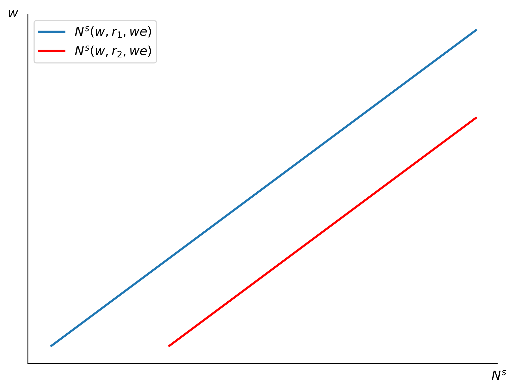
Obr. 17.1 Vplyv zvýšenia úrokovej miery na ponuku práce#
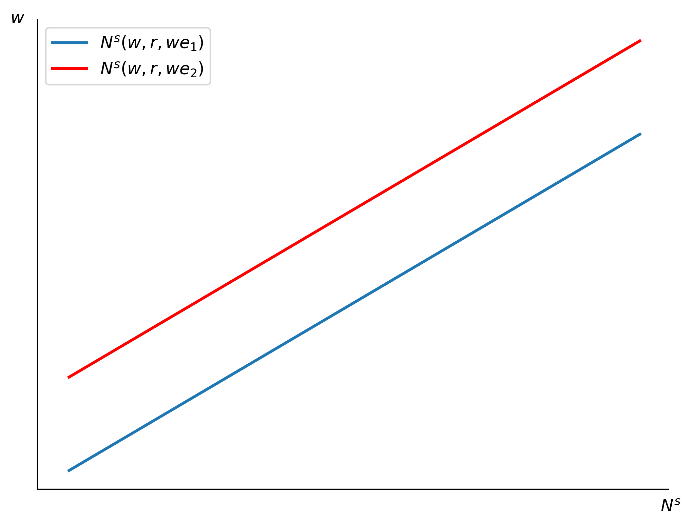
Obr. 17.2 Vplyv zvýšenia životného bohatstva na ponuku práce#
17.3. Spotrebiteľov dopyt po výstupe#
Podľa podmienok prvého rádu správania spotrebiteľa (17.5) až (17.8) ovplyvňujú spotrebiteľov dopyt po súčasných spotrebných statkoch najmä úroková miera a životné bohatstvo.
Úroková miera \(r\): Ak sa zvýši úroková miera a dynamický substitučný efekt preváži nad príjmovým efektom, spotrebiteľ obmedzí súčasnú spotrebu v prospech budúcej spotreby. Dopyt po súčasných spotrebných statkoch preto klesá.
Životné bohatstvo \(we\): Ak sa zvýši životné bohatstvo, spotrebiteľ príjmovým efektom zvýši súčasnú aj budúcu spotrebu. Dopyt po súčasných spotrebných statkoch preto rastie.
Spotrebiteľov dopyt po výstupe zapíšeme funkciou súčasného výstupu a úrokovej miery
pričom funkcia \(C^d\) je klesajúca v \(r\) a rastúca v \(we\).
Spotrebiteľov dopyt po výstupe je zobrazený na Obr. 17.3. Zvýšenie životného bohatstva posúva na krivku dopytu po spotrebných statkoch doprava.
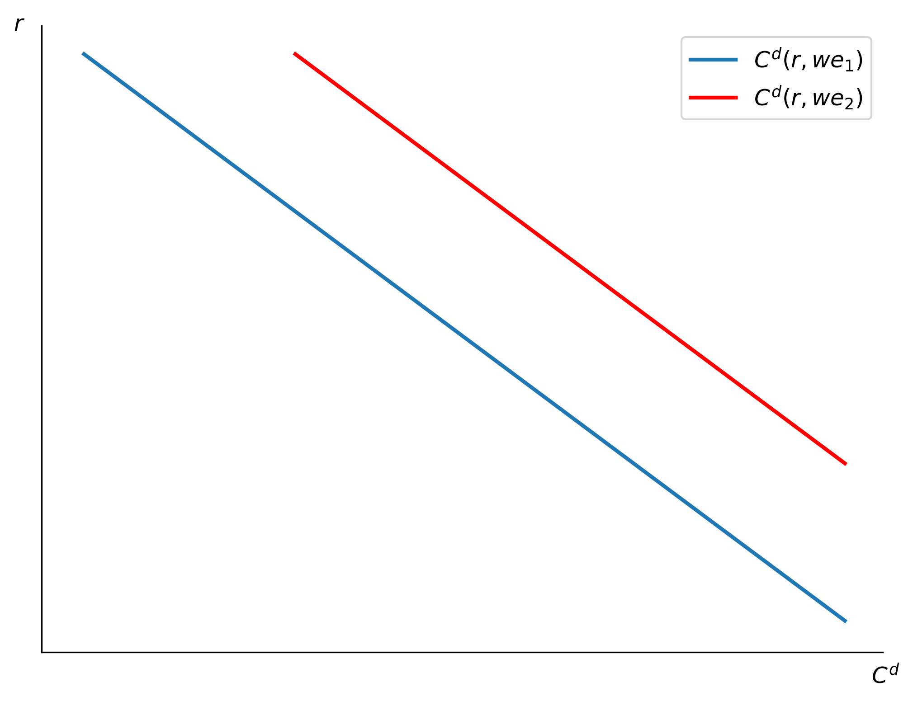
Obr. 17.3 Vplyv zvýšenia životného bohatstva na spotrebiteľov dopyt#
17.4. Reprezentatívna firma#
Reprezentatívna firma vyrába statok pomocou práce a kapitálu. V prvom období je zásoba kapitálu \(K\) predeterminovaná. Firma rozhoduje o práci v oboch obdobiach \(N\) a \(N'\) a o investíciách \(I\) v prvom období, ktorými sa zvýši zásoba kapitálu v druhom období \(K'\).
Produkčná funkcia v prvom období je
Produkčná funkcia v druhom období je
Pri vyjadrení zásoby kapitálu v ďalšom období využívame rovnaký princíp ako v Solowovom modeli rastu (Úvod do teórie rastu). Zásoba kapitálu sa zvyšuje investíciami, pričom časť existujúceho kapitálu sa v dôsledku opotrebenia znehodnotí. Parameter \(\delta\) vyjadruje mieru znehodnotenia kapitálu. Hrubé investície \(I\) zahŕňajú čisté investície aj investície do obnovy existujúceho kapitálu. Kapitál v ďalšom období je
Zisk firmy v prvom období je rozdiel medzi príjmom \(Y\) a nákladmi. Firma v prvom období má náklady z práce a náklady z investícií, platí
V druhom období firma neuskutočňuje ďalšie investície. Na konci obdobia jej však zostáva neznehodnotená časť kapitálu ((1-\delta)K’), ktorá predstavuje zostatkovú hodnotu kapitálu. Zisk firmy v druhom období je
Reprezentatívna firma vyberie takú prácu v prvom a druhom období a investície, aby maximalizovala súčasnú hodnotu zisku
za podmienok (17.11), (17.12), (17.13). Podmienky prvého rádu sú
a
Podľa prvých dvoch podmienok firma zamestnáva pracovníkov dovtedy, kým sa mzdová sadzba rovná hraničnému produktu práce. Posledná podmienka určuje optimálnu zásobu kapitálu. Firma investuje dovtedy, kým sa budúci čistý hraničný produkt kapitálu, teda hraničný produkt kapitálu znížený o znehodnotenie kapitálu, rovná úrokovej miere.
17.5. Dopyt po práci#
Dopyt po práci je vyjadrený podmienkou (17.17), podľa ktorej sa hraničný produkt práce rovná mzdovej sadzbe. Na dopyt po práci vplývajú nasledovné premenné:
Mzdová sadzba \(w\): Hraničný produkt práce je klesajúcou funkciou množstva práce. Ak sa zvýši mzdová sadzba, firma môže podmienku (17.17) splniť iba znížením pracovného dopytu. Dopyt po práci preto klesá.
Celková produktivita faktorov v prvom období \(A\): Zvýšenie celkovej produktivity faktorov zvyšuje hraničný produkt práce pri každej úrovni pracovného dopytu. Pri nezmenenej mzdovej sadzbe preto firma zvýši dopyt po práci.
Zásoba kapitálu \(K\): Vyššia zásoba kapitálu zvyšuje hraničný produkt práce. Pri nezmenenej mzdovej sadzbe preto firma zvýši dopyt po práci. Naopak, ak sa zásoba kapitálu zníži, dopyt po práci klesne.
Funkciu dopytu po práci môžeme zapísať v tvare
pričom funkcia \(N^d\) je klesajúca v \(w\) a rastúca v \(A\) a \(K\).
Dopyt po práci je zobrazený na Obr. 17.4 a Obr. 17.5. Zvýšenie celkovej produktivity faktorov posúva krivku dopytu po práci doprava. Naopak, pokles zásoby kapitálu posúva krivku dopytu po práci doľava.
Keďže v prvom období je zásoba kapitálu \(K\) predeterminovaná, firma môže na zmeny mzdovej sadzby reagovať iba úpravou pracovného dopytu.
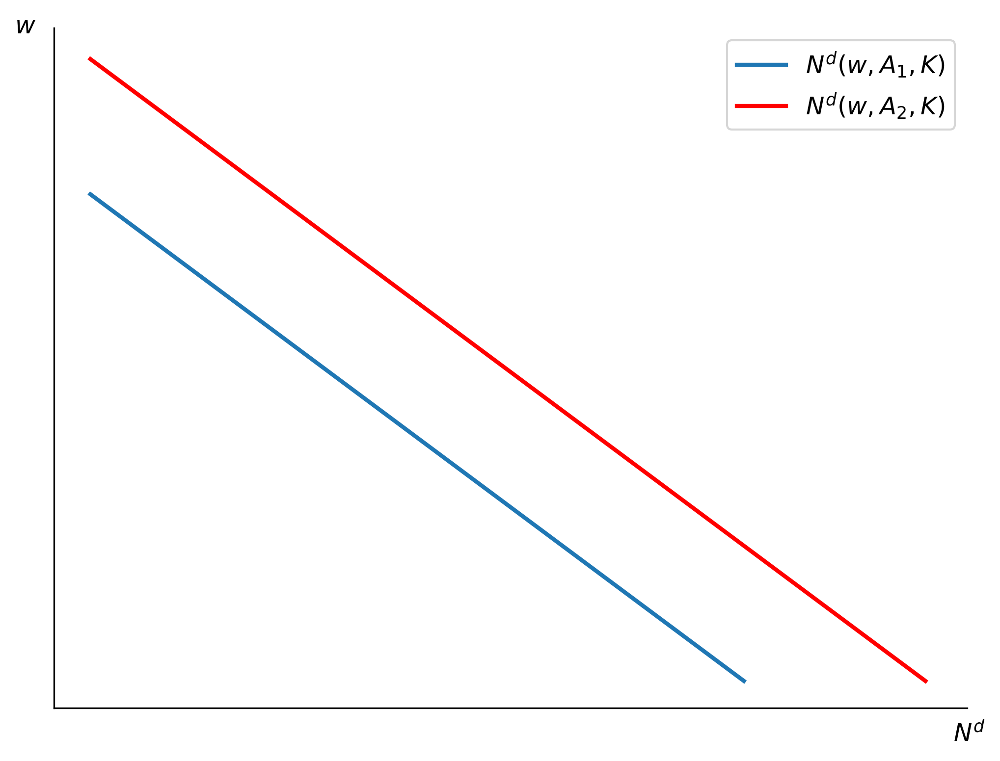
Obr. 17.4 Vplyv zvýšenia celkovej produktivity faktorov na dopyt po práci#
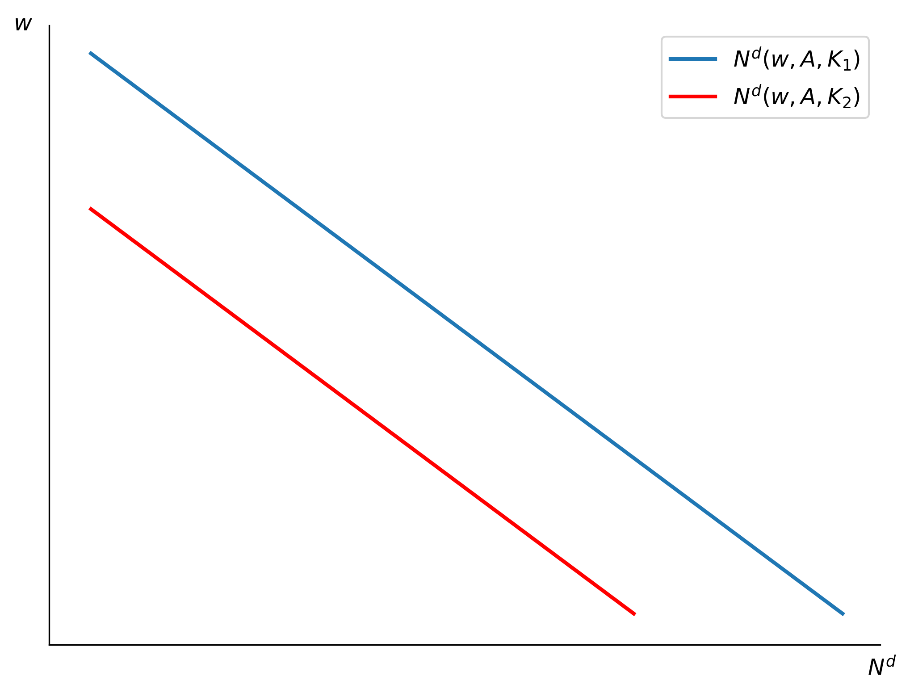
Obr. 17.5 Vplyv zníženia zásoby kapitálu na dopyt po práci#
17.6. Investičný dopyt#
Investičný dopyt je vyjadrený podmienkou (17.19), podľa ktorej sa budúci čistý hraničný produkt kapitálu rovná úrokovej miere. Na investičný dopyt vplývajú nasledovné premenné:
Úroková miera \(r\): Hraničný produkt kapitálu je klesajúcou funkciou zásoby kapitálu. Ak sa zvýši úroková miera, firma môže podmienku (17.19) splniť znížením stavu kapitálu v druhom období. Investičný dopyt klesá.
Celková produktivita faktorov v druhom období \(A'\): Zvýšenie budúcej celkovej produktivity faktorov zvyšuje budúci hraničný produkt kapitálu pri každej úrovni budúcej zásoby kapitálu. Pri nezmenenej úrokovej miera sa preto firma usiluje o vyššiu zásobu kapitálu v druhom období a zvýši investičný dopyt.
Zásoba kapitálu \(K\): Vzťah medzi investíciami a súčasnou zásobou kapitálu je (17.13). Pri danej požadovanej budúcej zásobe kapitálu vyššia súčasná zásoba kapitálu znižuje potrebu nových investícií. Naopak, pokles súčasnej zásoby kapitálu zvyšuje investičný dopyt.
Funkciu investičného dopytu môžeme zapísať v tvare
pričom funkcia \(I^d\) je klesajúca v \(r\) a \(K\) a rastúca v \(A'\).
Investičný dopyt je zobrazený na Obr. 17.6. Zvýšenie budúcej celkovej produktivity faktorov a pokles stavu kapitálu posúva krivku investičného dopytu doprava.
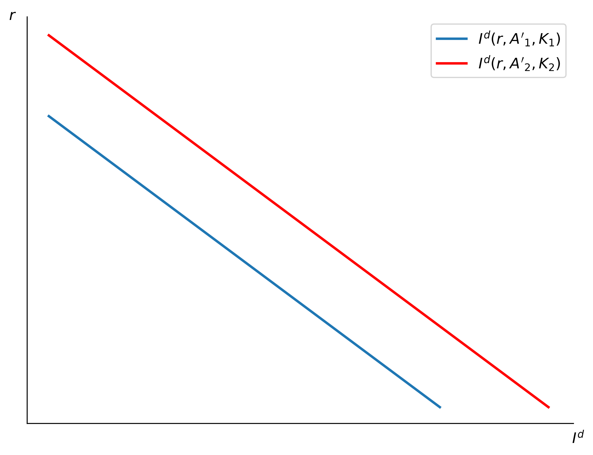
Obr. 17.6 Vplyv zvýšenia budúcej celkovej produktivity faktorov alebo zníženia zásoby kapitálu na investičný dopyt#
17.6.1. Investície, asymetrické informácie a finančná kríza#
Pri odvodení investičného dopytu sme predpokladali, že firmy si môžu bez problémov požičiavať za trhovú úrokovú mieru \(r\). V praxi však finančné trhy často nefungujú dokonale. Dôležitým zdrojom nedokonalostí sú asymetrické informácie, ktorým sme sa venovali v kapitole (Model prídelovej ekonomiky a nedokonalosti na finančných trhoch), konkrétne v časti Úroková prirážka.
Asymetrická informácia vzniká vtedy, keď jedna strana finančnej transakcie disponuje lepšími informáciami než druhá. V prípade investícií firmy spravidla poznajú kvalitu svojich projektov lepšie než banky alebo ostatní veritelia. Finančné inštitúcie preto nedokážu s istotou odlíšiť perspektívne firmy od firiem s vysokým rizikom zlyhania.
Predpokladajme, že domácnosti ukladajú svoje úspory v bankách za trhovú úrokovú mieru \(r\). Banky následne poskytujú úvery firmám. Keďže však časť dlžníkov nemusí svoje záväzky splatiť, banky požadujú od dlžníkov vyššiu úrokovú mieru
kde \(r_p\) predstavuje úrokovú prirážku.
Pre firmu, ktorá financuje investície pomocou úveru, už nie sú nákladom investícií iba trhové úroky \(r\), ale úroky vrátane úrokovej prirážky \(r+r_p\). Podmienku prvého rádu (17.19) prepíšeme do tvau
Po úprave získame
Úroková prirážka pôsobí podobne ako dodatočné zdanenie investícií. Pri danej úrokovej miere znižuje čistý výnos z kapitálu a vedie firmy k nižším investíciám.
Zvýšenie úrokovej prirážky posúva krivku investičného dopytu doľava. Takáto situácia môže nastať počas finančnej krízy, keď banky očakávajú vyšší podiel nesplatených úverov a sprísňujú úverové podmienky. Pokles investičného dopytu následne znižuje agregátny dopyt a hospodársku aktivitu.
Mechanizmus predstavuje jeden z kanálov, ktorým sa problémy finančného sektora prenášajú do reálnej ekonomiky. Rast neistoty a rizikových prirážok vedie k poklesu investícií, produkcie a zamestnanosti aj v prípade, ak sa základná trhová úroková miera výrazne nezmení.
Vplyv zvýšenia úrokovej prirážky na investičný dopyt je zobrazený na Obr. 17.7.
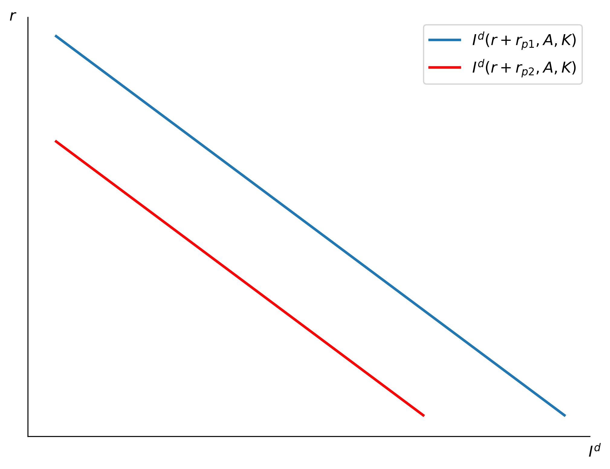
Obr. 17.7 Vplyv zvýšenia úrokovej prirážky na investičný dopyt#
17.7. Vláda#
Vláda v oboch obdobiach vyberá paušálne dane \(T,T'\) na financovanie vlastnej spotreby \(G,G'\). V prvom období môže emitovať vládne dlhopisy \(B\) na financovanie rozpočtového deficitu \(G-T\). V kapitole Model prídelovej ekonomiky a nedokonalosti na finančných trhoch sme odvodili životný rozpočet vlády (12.10):
17.8. Konkurenčná rovnováha#
- Konkurenčná rovnováha
Pri danej spotrebe vlády \(\{G,G'\}\) a technológii firmy \(\{A,A'\}\) je konkurenčnou rovnováhou taká alokácia spotrebiteľa \(\{\ell,\ell',C,C'\}\), alokácia firmy \(\{N,N',Y,Y',K'\}\) a množina cien \(\{w,w',r\}\), že
spotrebiteľ rieši úlohu maximalizovať funkciu užitočnosti (17.1) vzhľadom na životný rozpočet (17.4),
vláda spĺňa životný rozpočet (17.24) a
trh práce je v rovnováhe
trh produktov je v rovnováhe
Konkurenčnú rovnováhu možno charakterizovať sústavou podmienok prvého rádu spotrebiteľa (17.5) až (17.8), podmienok prvého rádu firmy (17.17) až (17.19) životného rozpočtu vlády (17.24), produkčnou funkciou a výpočtom budúceho kapitálu (17.11) až (17.13).
17.9. Ponuka výstupu v súčasnom období#
V tejto kapitole budeme konkurenčnú rovnováhu interpretovať graficky rovnováhou na trhu prdoduktov a trhu práce. Pre trh práce sme už odvodili dopytovú Obr. 17.4 a ponukovú funkciu Obr. 17.1.
Na Obr. 17.8 je rovnováha na trhu práce v bode \([N^*,w^*]\), kde sa pretínajú krivky ponuky a dopytu po práci. Keďže zásoba kapitálu \(K\) je v prvom období predeterminovaná, jediným výrobným faktorom, ktorý sa môže prispôsobiť zmenám ekonomických podmienok, je práca. Rovnováha na trhu práce preto prostredníctvom produkčnej funkcie (17.11) jednoznačne určuje rovnovážny výstup ekonomiky \(Y^*\).
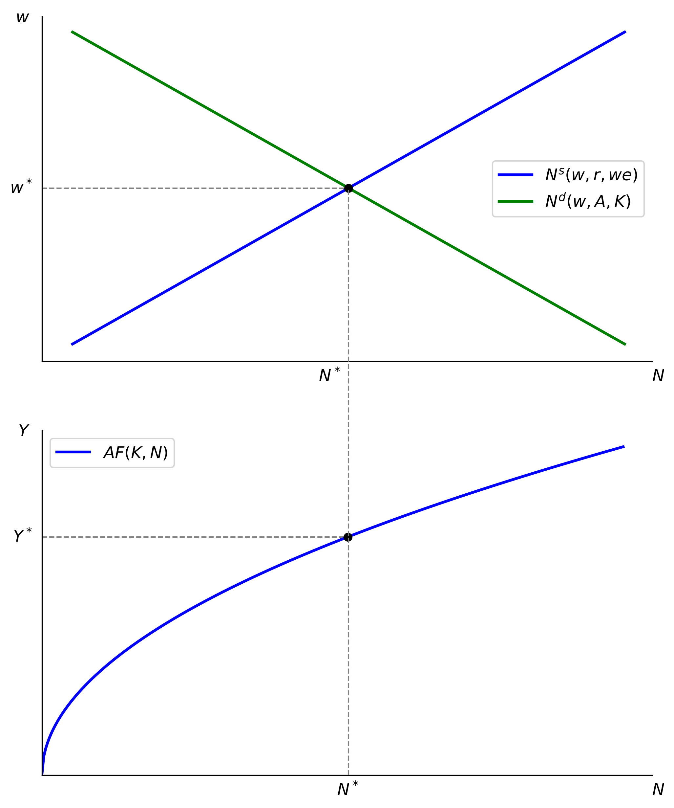
Obr. 17.8 Výstup odvodený z rovnováhy na trhu práce#
Ponuka práce závisí od úrokovej miery. Pre rôzne hodnoty úrokovej miery získame rôzne rovnovážne dvojice \([N^*,w^*]\) na trhu práce a zodpovedajúce úrovne výstupu \(Y^*\).
- Funkcia ponuky výstupu
Funkcia ponuky výstupu je množina dvojíc výstupu a úrokovej miery \([Y,r]\), pri ktorých je trh práce v rovnováhe.
Na Obr. 17.12 uvažujeme dve rôzne hodnoty úrokovej miery \(r_1<r_2\). Pri nižšej úrokovej miere \(r_1\) je rovnováha na trhu práce v bode \([N_1,w_1]\), čomu zodpovedá výstup \(Y_1\).
Pri vyššej úrokovej miere \(r_2\) je v dôsledku dynamického substitučného efektu ponuka práce vyššia. Rovnováha na trhu práce sa preto posunie do bodu \([N_2,w_2]\), kde je práca vyššia a mzdová sadzba nižšia. Vyššia práca vedie pri nezmenenej technológii a zásobe kapitálu k vyššiemu výstupu \(Y_2\).
Ak spojíme všetky rovnovážne kombinácie úrokovej miery a výstupu, získame krivku ponuky výstupu.
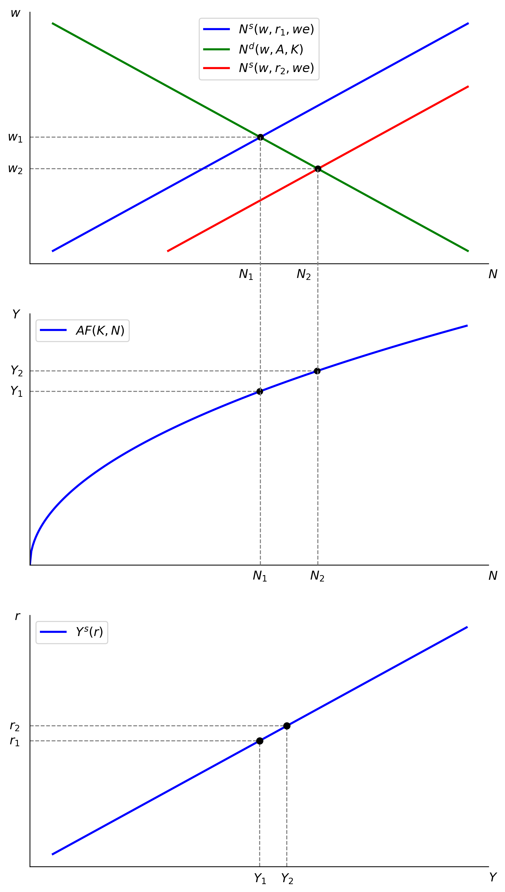
Obr. 17.9 Ponuka produktov#
Na ponuku výstupu vplývajú všetky faktory, ktoré ovplyvňujú trh práce. Ponuka práce závisí od životného bohatstva \(we\). Dopyt po práci závisí od súčasnej celkovej produktivity faktorov \(A\) a od predeterminovanej zásoby kapitálu \(K\).
Na Obr. 17.10 je zobrazený vplyv zvýšenia vládnej spotreby v prvom alebo druhom období. Ak sa vládna spotreba v súčasnosti alebo v budúcnosti zvýši, zníži sa životné bohatstvo spotrebiteľa z \(we_1\) na \(we_2\). Spotrebiteľ príjmovým efektom obmedzí voľný čas, a preto sa ponuka práce posunie doprava. Rovnovážne množstvo práce sa zvýši z \(N_1\) na \(N_2\) a mzdová sadzba klesne z \(w_1\) na \(w_2\).
Vyššie množstvo práce vedie pri nezmenenej celkovej produktivity faktorov a nezmenenej zásobe kapitálu k zvýšeniu výstupu z \(Y_1\) na \(Y_2\) pri nezmenenej úrokovej miere \(r\). Krivka ponuky výstupu sa preto posunie doprava.
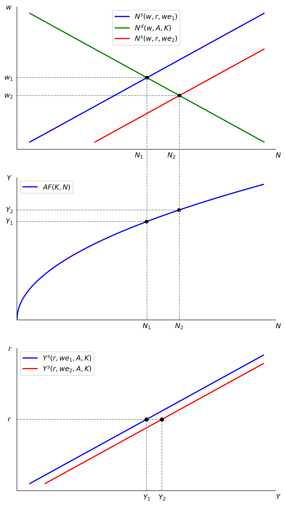
Obr. 17.10 Vplyv zvýšenia vládnej spotreby v súčasnom alebo budúcom období na ponuku výstupu#
Ak sa zvýši celková produktivita faktorov z \(A_1\) na \(A_2\), zvýši sa hraničný produkt práce. Krivka dopytu po práci sa na Obr. 17.11 posunie doprava. Množstvo práce vzrastie z \(N_1\) na \(N_2\) a mzdová sadzba z \(w_1\) na \(w_2\).
Produkčná funkcia sa v dôsledku zvýšenia celkovej produktivity faktorov posunie nahor. Výstup sa zvýši z \(Y_1\) na \(Y_2\) vplyvom rastu \(A\) aj rastu práce \(N\), pričom úroková miera \(r\) zostáva nezmenená. Krivka ponuky výstupu sa posunie doprava.
Analogicky, pokles predeterminovanej zásoby kapitálu \(K\) alebo pokles celkovej produktivity faktorov \(A\) posúva krivku ponuky výstupu doľava.
Ponuku výstupu možno zapísať funkciou
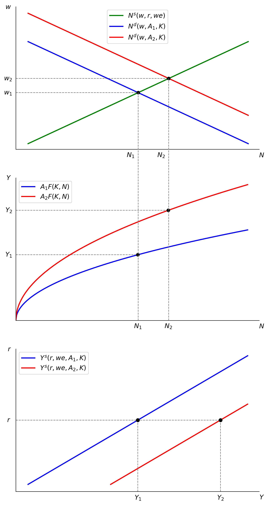
Obr. 17.11 Vplyv zvýšenia celkovej produktivity faktorov v súčasnom období na ponuku výstupu#
17.10. Dopyt po výstupe v súčasnom období#
Dopyt po výstupe pozostáva z dopytu spotrebiteľov (17.10), investícií (17.21) a dopytu vlády \(G\). Môžeme ho zapísať funkciou
Keďže spotrebný aj investičný dopyt sú klesajúcimi funkciami úrokovej miery, dopyt po výstupe je tiež klesajúcou funkciou úrokovej miery.
Krivka funkcie dopytu po výstupe (17.26) sa na Obr. 17.12 posunie doprava ak sa zvýši príjem \(Y\), životné bohatstvo \(we\) a budúca celková produktivita faktorov \(A'\), alebo ako sa zníži predetermnovaný kapitál \(K\).
Ak sa zvýši príjem \(Y\) alebo životné bohatvsto \(we\), spotrebiteľ príjmovým efektom zvýši svoj dopyt. Životné bohatstvo sa môže zvýšiť
znížením daní v súčasnom alebo budúcom období \(T,T'\) alebo
zvýšením budúceho výstupu \(Y'\).
Ak sa zvýši budúca celková produktivita faktorov \(A'\), firme sa zvýši hraničný produkt budúceho kapitálu a tá zvýši investičný dopyt.
Ak sa zníži predeterminovaný kapitál \(K\), firma má snahu vyrovnať pôvodnú úroveň kapitálu a zvýši investičný dopyt.
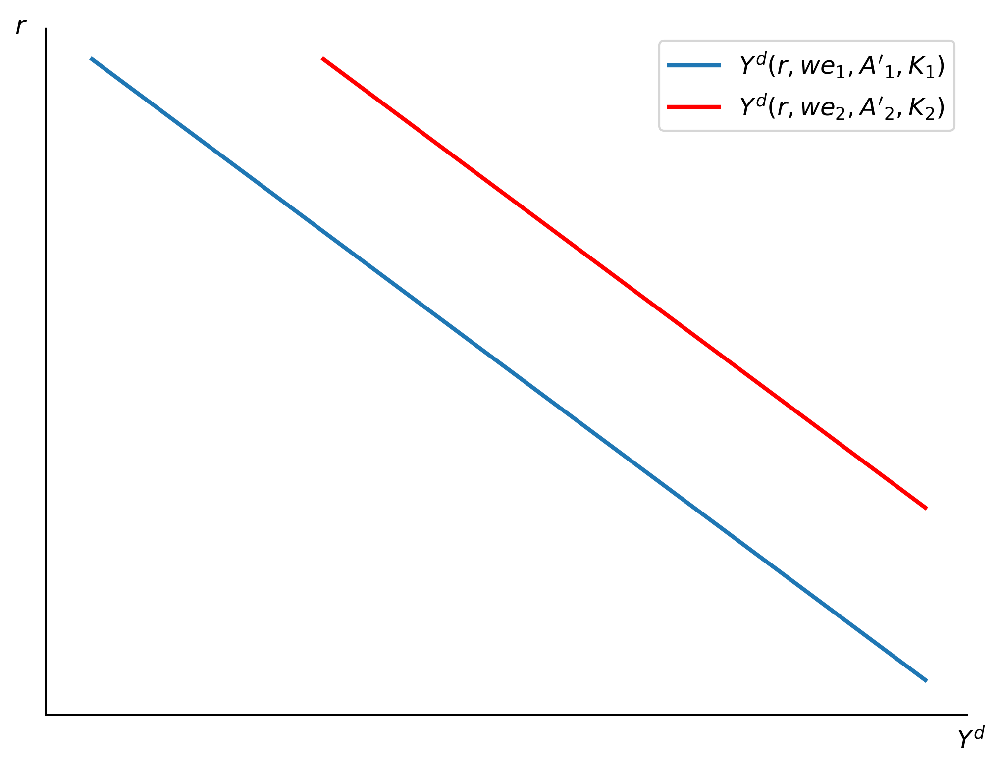
Obr. 17.12 Dopyt po vstupe a vplyv zvýšenia životného bohatstva alebo budúcej celkovej produktivity faktorov alebo zníženia kapitálu na dopyt#
17.11. Grafická interpretácia konkurenčnej rovnováhy#
Konkurenčnú rovnováhu možno graficky interpretovať pomocou rovnováhy na trhu práce a trhu výstupu v súčasnom období. Pohyby na trhu práce pritom ovplyvňujú ponuku výstupu.
Rovnovážne hodnoty práce, mzdovej sadzby, výstupu a úrokovej miery \(\{N^*,w^*,Y^*,r^*\}\) sú určené priesečníkmi kriviek ponuky a dopytu na trhu práce a trhu výstupu.
Pri známej rovnovážnej úrokovej miere \(r^*\) možno určiť rovnovážnu spotrebu a investície dosadením \(r^*\) do funkcií spotrebného a investičného dopytu (17.10) a (17.21).
Konkurenčná rovnováha je zobrazená na Obr. 17.13.
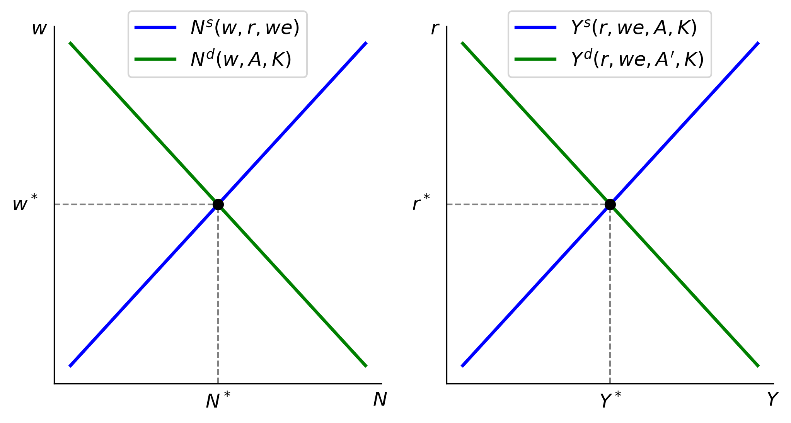
Obr. 17.13 Konkurenčná rovnováha#
V komparatívnej statike preveríme reakciu konkurenčnej rovnováhy na nasledovné šoky (Šok):
Vplyv dočasného zvýšenia súčasných vládnych nákupov (dopytový šok).
Vplyv poklesu súčasnej zásoby kapitálu spôsobeného živelnou katastrofou alebo vojnou (pokles predeterminovaného kapitálu).
Vplyv dočasného zvýšenia súčasnej celkovej produktivity faktorov (súčasný technologický šok).
Vplyv očakávaného zvýšenia budúcej celkovej produktivity faktorov (budúci technologický šok).
Vplyv zvýšenia úrokovej prirážky spôsobenej nedokonalosťami na trhu dlhopisov (finančný šok).
Vplyv sektorových šokov (simultánny pokles ponuky a dopytu po práci).
Vplyv pandémie (pokles ponuky práce).
17.12. Vplyv zvýšenia súčasných vládnych nákupov na konkurenčnú rovnováhu#
Predpokladajme, že ekonomika je pred zmenou vládnych nákupov v rovnováhe. Na Obr. 17.14 je rovnováha charakterizovaná priesečníkom kriviek dopytu a ponkuky na pracovnom trhu a trhu výstupu. Trh práce je v rovnováhe a rovnovážne hodnoty práce a mzdovej sadzby sú \([N^*_1,w^*_1]\). Rovnováha na trhu výstupu je \([Y^*_1,r^*_1]\).
Vládne nákupy majú priamy efekt na dopyt po výstupe \(Y^d(r,we,A',K,G)\) a na životné bohatstvo spotrebiteľa \(we\). Zmena životného bohatsva ďalej ovplyvní dopyt po výstupe \(Y^d(r,we,A',K,G)\), ponuku práce \(N^s(w,r,we)\) a ponuku výstupu \(Y^s(r,A,we,K)\). Pohyby dopytu a ponuky výstupu ovplyvnia úrokovú mieru \(r\) a cez ňu ďalej ponuku práce \(N^s(w,r,we)\).
Aký je vplyv vládnych nákupov na životné bohatsvo spotrebiteľa?
Vláda financuje zvýšené nákupy zvýšením súčasných alebo budúcich daní \(T,T'\). Platí, že ak sa súčasná hodnota daní zvýši o jednotku, zníži sa o jednotku životné bohatstvo spotrebiteľa;
Preskúmajme teraz, ako sa posunie dopyt po výstupe \(Y^d(r,we,A',K,G)\) pri nezmenej úrokovej miere \(r\).
Celkový vplyv vládnych nákupov na dopyt po výstupe \(Y^d(r,we,A',K,G)\) je:
Investičný dopyt \(I^d(r,A',K)\) je nezávislý od vládnych nákupov \(G\) aj od životného bohatstva \(we\). Rovnicu možno prepísať do tvaru
Zohľadnením zmeny životného bohatsva spôsobenej jednotkovou zmenou vládnych nákupov máme
Ak sa spotrebiteľovi zvýši daň o jednotku, zníži sa mu o jednotku životné bohatstvo a disponibilný príjem. Reakcia spotrebného dopytu na zmenu príjmu je Hraničný sklon k spotrebe. Preto prvý člen na pravej strane rovnice so znamienkom mínus môžeme zapísať v tvare
kde \(mpc\) je hraničný sklon k spotrebe. Za predpokladu, že zmena vládnych nákupov je dočasná, podľa Friedmanovej hypotézy trvalého príjmu (Friedmanova hypotéza trvalého príjmu) je hraničný sklon k spotrebe kladný a menší ako jedna: \(0<mpc<1\). Preto platí
zvýšením vládnych nákupov sa v pravom paneli Obr. 17.14 dopyt po výstupe posunie doprava zo zelenej čiary do tmavčervenej.
Ak sa zníži spotrebiteľovo životné bohatstvo, spotrebiteľ príjmovým efektom zníži nielen spotrebný dopyt aj voľný čas – zvýši ponuku práce. V ľavom paneli Obr. 17.14 sa krivka ponuky práce posunie doprava z modrej do oranžovej.
Zvýšením ponuky práce sa zvýši ponuka výstupu. V pravom paneli Obr. 17.14 sa krivka ponuky práce posunie doprava z modrej do červenej.
Predpokladáme, že príjmový efekt zníženia životného bohatstva nie je dostatočne veľký, aby zvýšenie ponuky výstupu pokrylo zvýšenie dopytu po výstupe. Rovnováha na trhu výstupu sa zmení z \([Y^*_1,r^*_1]\) na \([Y^*_2,r^*_2]\). Rovnovážny výstup aj rovnovážna úroková miera vzrastú.
Vplyvom zvýšenia úrokovej miery z \(r^*_1\) na \(r^*_2\), spotrebiteľ dynamickým substitučným efektom ešte viac zníži voľný čas a ponúka viac práce. V ľavom paneli Obr. 17.14 sa krivka ponuky práce posunie ďalej doprava z oranžovej do červenej.
Na trhu práce sa rovnováha zmení z \([N^*_1,w^*_1]\) na \([N^*_2,w^*_2]\). Zvýši sa množstvo práce a zníži sa reálna mzdová sadzba.
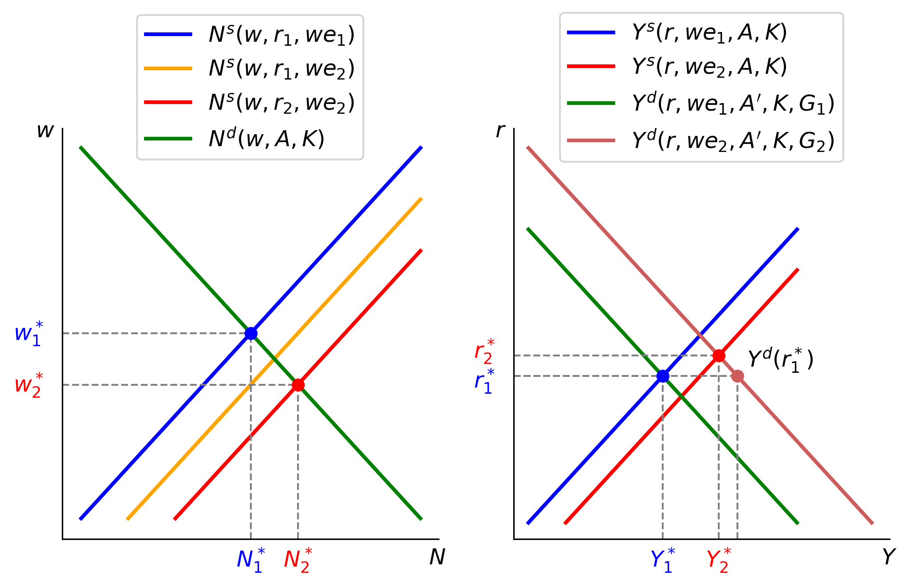
Obr. 17.14 Vplyv zvýšenia vládnych nákupov na konkurenčnú rovnováhu#
Aké sú fiškálne multiplikátory Fiškálny multiplikátor?.
Výstup sa vplyvom zvýšenia vládnej spotreby zvýši. Pri nezmenenej úrokovej miere by sa dopyt po výstupe zvýšil o \((1-MPC)\Delta G\). Keďže sa v rovnováhe zvýši úroková miera, časť súkromného spotrebného a investičného dopytu je vytlačená. Rovnovážny výstup preto vzrastie o menej ako \((1-MPC)\Delta G\).
V pravom paneli Obr. 17.14 sa dopyt po výstupe zvýši o \((1-MPC)\Delta G\). Bod označený ako \(Y^d(r^*_1)\) predstavuje posun dopytu pri nezmenenej úrokovej miere \(r^*_1\). Výstup sa zvýši menej, lebo úroková miera v skutočnosti narastie. Platí
Spotreba sa zníži dvoma efektmi:
príjmovým efektom zníženia životného bohatstva a
dynamickým substitučným efektom zvýšenia úrokovej miery.
Spotreba sa zvýšením vládnych nákupov zníži, ceteris paribus.
Ak sa zvýšia vládne nákupy, zvýši sa úroková miera a zníži sa investičný dopyt.
Investície sa zvýšením vládnych nákupov, ceteris paribus, znížia.
Rovnako ako v statickom modeli (Statický model všeobecnej rovnováhy) aj v tomto modeli sa súkromný dopyt po výstupe zníži. Vládne nákupy vytláčajú súkromnú spotrebu \(C\) a súkromné investície \(I\).
17.13. Vplyv zníženia kapitálu na konkurenčnú rovnováhu#
Kapitál je predeterminovaná premenná, ale môže sa znížiť dôsledkom katastrofy alebo vojny.
Vplyv zníženia predeterminovaného kapitálu je zobrazený na Obr. 17.15. Pôvodná rovnováha je zonačená indexom \(1\). je to priesečník modrých čiar ponuky a zelených čiar dopytu na trhu práce a produktov. Nová rovnováha je označená indexom \(2\).
Ak sa zníži kapitál, firme sa zníži súčasný hraničný produkt práce. V ľavom paneli na Obr. 17.15 sa dopyt po práci posunie doľava zo zelenej do tmavočervenej čiary.
Vplyvom poklesu práce sa zníži ponuka výstupu. V pravom paneli na Obr. 17.15 sa ponuka výstupu posunie doľava z modrej do červenej čiary.
Ak sa zníži predeterminovaný kapitál, firmy sa snažia vyrovnať pôvodnú úroveň kapitálu a zvýšia investičný dopyt. V pravom paneli Obr. 17.15 sa dopyt po výstupe posunie doprava zo zelenej do tmavočervenej čiary.
Pokles ponuky výstupu a rast dopytu po výstupe vedú k zvýšeniu rovnovážnej úrokovej miery z \(r^*_1\) na \(r^*_2\).
Vplyvom dynamického substitučného efektu zvýšenia úrokovej miery, spotrebiteľ zníži súčasný voľný čas. V ľavom paneli na Obr. 17.15 sa ponuka práce posunie doprava z modrej do červenej čiary.
Nižší dopyt a vyššia ponuka na trhu práce vedú k poklesu rovnovážnej mzdovej sadzby z \(w^*_1\) na \(w^*_2\).
Zmena výstupu a práce závisí od dvoch protichodných efektov:
pokles kapitálu vo výrobe znižuje výstup,
pokles kapitálu zvyšuje investičnú aktivitu firiem, a tým aj dopyt po výstupe.
Podľa empirických pozorovaní sú oba efekty približne rovnako silné, takže výsledný vplyv na reálny HDP býva malý. Napríklad po vyliatí rieky Mississippi v roku 1993 alebo po hurikáne Katrina v roku 2005 sa reálny HDP zmenil menej, než by naznačoval rozsah fyzických škôd.
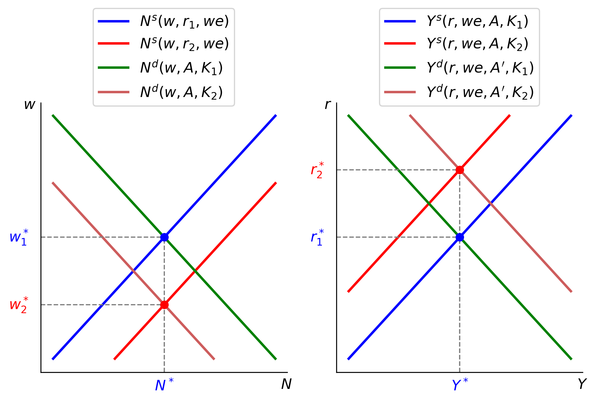
Obr. 17.15 Vplyv katastrofy alebo vojny na konkurenčnú rovnováhu#
17.14. Vplyv zvýšenia súčasnej celkovej produktivity faktorov#
Analogicky s predchádzajúcimi grafmi je pôvodná rovnováha pred realizáciou šoku na Obr. 17.16 označená indexom \(1\) a nová rovnováha indexom \(2\).
Zvýšením celkovej produktivity faktorov \(A\), ceteris paribus, sa firme zvýši hraničný produkt práce. V ľavom paneli na Obr. 17.16 sa krivka dopytu po práci posunie doprava zo zelenej do tmavočervenej čiary.
Vyšší dopyt po práci vedie k zvýšeniu práce vo výrobe a k rastu výstupu. V pravom paneli na Obr. 17.16 sa krivka ponuky výstupu posunie doprava z modrej do červenej čiary.
V novej rovnováhe \([Y^*_2,r^*_2]\) je výstup vyšší a úroková miera nižšia.
Pokles úrokovej miery vyvolá dynamický substitučný efekt. Spotrebiteľ zvýši súčasný voľný čas a zníži ponuku práce. V ľavom paneli na Obr. 17.16 sa krivka ponuky práce posunie doľava z modrej do červenej čiary.
Predpokladáme, že tento efekt je slabší ako pozitívny vplyv zvýšenia produktivity na dopyt po práci. V novej rovnováhe \([N^*_2,w^*_2]\) sa preto zvýši práca aj reálna mzdová sadzba.
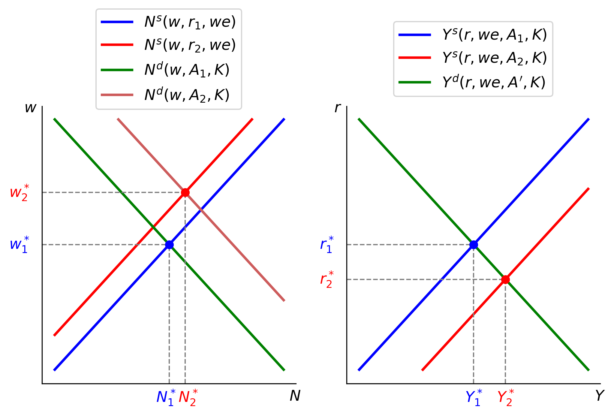
Obr. 17.16 Vplyv zvýšenia súčasnej celkovej produktivity faktorov na konkurenčnú rovnováhu#
Poklesom úrokovej miery sa zvýšia investície aj spotreba:
zvýši sa investičný dopyt a investície,
dynamickým substitučným efektom spotrebiteľ zvýši súčasnú spotrebu.
Reakcia priemerného produktu práce bude kľúčová pri hodnotení teórií hospodárskych cyklov. Pripomeňme, že na fiškálny šok ekonomika reagovala zmenou práce. Ak sa v produkčnej funkcii mení práca a výstup, priemerný produkt práce reaguje opačným smerom ako množstvo práce, ako ukazuje pravý panel na Obr. 2.7.
Zvýšenie celkovej produktivity faktorov však posúva produkčnú funkciu nahor. Práca sa síce tiež zvýši, ale reakciu priemerného produktu práce prezentuje Obr. 16.11. Ak sa zvýši celková produktivita faktorov, zvýši sa výstup aj priemerný produkt práce.
Upozornenie
Zmeny celkovej produktivity faktorov ovplyvňujú nielen produkčné rozhodnutia firmy, ale aj životné bohatstvo spotrebiteľa. Vyššia produktivita zvyšuje súčasné alebo budúce príjmy domácností, a tým aj ich životné bohatstvo.
Rast životného bohatstva vyvoláva príjmový efekt, ktorý zvyšuje dopyt po spotrebe a voľnom čase. Podľa okolností sa preto môžu posunúť nielen dopyt po výstupe, ale aj ponuka práce a ponuka výstupu.
17.15. Vplyv očakávaného zvýšenia budúcej celkovej produktivity faktorov#
Očakávania o vyššej celkovej produktivite faktorov v budúcom období predstavujú optimistické správy.
Spotrebiteľ očakáva vyššiu produktivitu výrobných faktorov, a teda aj vyšší budúci príjem \(Y'\). V dôsledku toho sa cíti bohatší a jeho životné bohatstvo sa zvýši z \(we_1\) na \(we_2\).
Spotrebiteľ príjmovým efektom zvýši spotrebu aj voľný čas. Na trhu práce sa to v ľavom paneli Obr. 17.17 prejaví posunom krivky ponuky práce doľava z modrej do oranžovej čiary.
Pri zníženom pracovnom úsilí spotrebiteľa sa zníži ponuka výstupu. V pravom paneli Obr. 17.17 sa krivka ponuky výstupu posunie doľava z modrej do červenej čiary.
Zvýši sa dopyt po výstupe nielen príjmovým vplyvom zvýšenia životného bohatstva a spotrebného dopytu, ale aj vplyvom zvýšenia budúceho hraničného produktu kapitálu a dopytu po investíciách. V pravom paneli Obr. 17.17 sa krivka dopytu po výstupe posunie doprava z modrej do červenej čiary.
Zvýši a úroková miera z \(r^*_1\) na \(r^*_2\). Dynamickým substitučným efektom spotrebiteľ zníži voľný čas. V ľavom paneli Vplyv očakávaného zvýšenia budúcej celkovej produktivity faktorov na konkurenčnú rovnováhu sa krivka ponuky práce posunie naspäť doprava z oranžovej do červenej čiary.
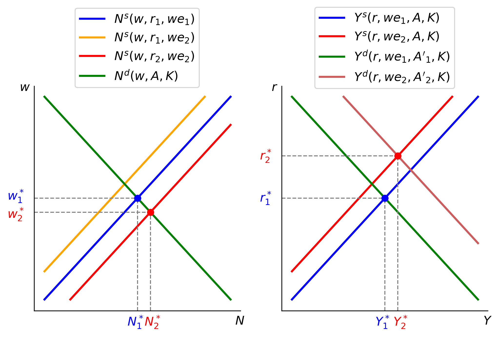
Obr. 17.17 Vplyv očakávaného zvýšenia budúcej celkovej produktivity faktorov na konkurenčnú rovnováhu#
Vplyvom optimistických očakávaní zvýšenia celkovej produktivity faktorov sa zvýši úroková miera. Vplyv na ostatné premenné závisí od veľkosti dynamického substitučného a príjmového efektu.
Ak je dynamický substitučný efekt väčší ako príjmový, posun ponuky práce doprava z oranžovej do červenej čiary ja väčší ako opačný posun z modrej do oranžovej čiary. Potom aj posun dopytu po výstupe doprava zo zelenej do tmavočervenej čiary je väčší ako posun krivky ponku výstupu z modrej do červenej čiary.
Ak je dynamický substitučný efekt väčší ako príjmový, výstup a práca sa zvýšia a reálna mzdová sadzba sa zníži. Spotrebiteľ dynamickým substitučným efektom odloži súčasnú spotrebu do budúcnosti a investície sa zvýšia.
V príklade (Príklad: Dynamický model všeobecnej rovnováhy v jazyku Python) uvažujeme jednoduchú logaritmickú funkciu užitočnosti. Pri tejto kalibrácii preváži príjmový efekt zvýšenia životného bohatstva nad dynamickým substitučným efektom rastu úrokovej miery. Výsledok je preto opačný: výstup, práca a investície klesnú, zatiaľ čo reálna mzdová sadzba a súčasná spotreba vzrastú (Vplyv očakávaného zvýšenia budúcej celkovej produktivity faktorov).
Umelá inteligencia a očakávania budúcej produktivity
Rozvoj internetu bol na prelome tisícročí sprevádzaný vysokými očakávaniami budúceho rastu produktivity. Časť týchto očakávaní sa ukázala ako prehnaná, čo prispelo k vzniku “dot-com” krízy.
Podobnú diskusiu dnes vyvoláva rozvoj umelej inteligencie. Ak by investori očakávali výrazný rast budúcej produktivity a tieto očakávania by sa neskôr ukázali ako prehnané, mohla by v budúcnosti vzniknúť podobná korekcia investícií a cien aktív. Ak sa však očakávané zvýšenie produktivity naplní, umelá inteligencia môže naopak prispieť k dlhodobému rastu životnej úrovne.
Dot-com kríza je identifikovaná v úadajoch ekonomiky EMÚ v Tab. 19.1.
17.16. Vplyv zvýšenia úrokovej prirážky spôsobenej nedokonalosťami na trhu dlhopisov (finančný šok)#
Asymetrické informácie sú príčinou úrokovej prirážky dlžníkov (Úroková prirážka). Banky nedokážu presne odhadnúť bonitu dlžníkov a preto im všeobecne požičiavajú za vyššiu úrokovú miery, ako je úroková miera vkladov.
V Spojených štátoch v 2008 sa zvýšila úroková prirážka ako dôsledok podhodnoteného odhadu podielu nebonitných dlžníkov a prepukla globálna finančná kríza.
Vplyvom zvýšenia úrokovej prirážky sa zvýšia náklady financovania investícií a spotreby prostredníctvom úveru.
Okrem toho zvýšenie úrokovej prirážky zdraží spotrebiteľovi financovanie súčasnej spotreby prostredníctvom úveru. Spotrebiteľ tak čelí prísnejšiemu úverovému ohraničeniu. Hoci sa jeho príjem bezprostredne nemení, zhoršenie podmienok financovania pôsobí podobne ako pokles životného bohatstva. Životné bohatstvo sa zníži z \(we_1\) na \(we_2\).
Vyššia úroková prirážka zníži investičný dopyt. Súčasne zhoršenie podmienok financovania pôsobí podobne ako pokles životného bohatstva a príjmovým efektom zníži spotrebný dopyt. V pravom paneli Obr. 17.18 sa krivka dopytu po výstupe posunie doľava zo zelenej do tmavočervenej čiary.
Príjmovým efektom spotrebiteľ zníži voľný čas. V ľavom paneli Obr. 17.18 sa krivka ponuky práce posunie doprava z modrej do červenej čiary.
Zvýšením práce sa v pravom paneli Obr. 17.18 krivka ponuky výstupu posunie doprava z modrej do oranžovej čiary.
V novej rovnováhe na trhu výstupu sa zníži úroková miera z \(r^*_1\) na \(r^*_2\).
Vplyvom tohto zníženia úrokovej miery spotrebiteľ dynamickým substitučným efektom zvýši voľný čas. Ponuka práce sa posunie opačným smerom z oranžovej do červenej čiary.
Vplyvom zvýšenia úrokovej prémie sa zníži úroková miera. Nie je zrejmé ako zareaguje výstup, práca a mzdová sadzba. Ak je dynamický substitučný efekt spôsobený poklesom úrokovej miery silnejší ako príjmový efekt spôsobený poklesom životného bohatstva, výsledná ponuka práce sa zníži. V takom prípade klesnú práca aj výstup a reálna mzdová sadzba vzrastie.
Pokles úrokovej miery zároveň podporuje súčasnú spotrebu. Dynamický substitučný efekt vedie spotrebiteľov k presunu časti budúcej spotreby do súčasnosti.
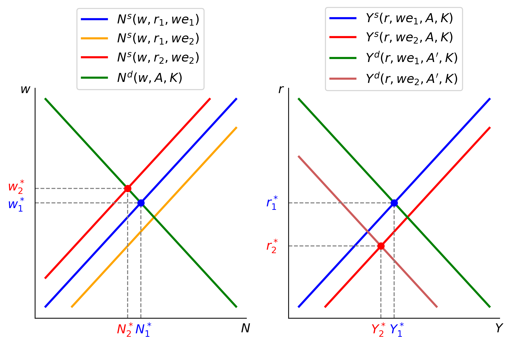
Obr. 17.18 Vplyv zvýšenia úrokovej prirážky na konkurenčnú rovnováhu#
17.17. Vplyv sektorových šokov (simultánny pokles ponuky a dopytu po práci)#
V časti Model vyhľadávania a trh práce sme predstavili efekt vyhľadávania na trhu práce. Ukázali sme, že zvýšenim efektu vyhľdávania sa zníži miera nezamestnanosti, zatiaľ čo miera voľných miest sa nemení.
Veľký vplyv na efekt vyhľadávania má štruktúra dopytu a ponuky práce. Ak v ekonomike existuje kvalifikovaná pracovná sila v určitom výrobnom sektore, v ekonomike bude nízka miera nezamestnanosti, ak v nej má daný priemyselný sektor zastúpenie. Ak sa v ekonomike mení štruktúra priemyslu, mení sa efekt vyhľadávania na trhu práce. Hovoríme o sektorovom šoku.
Po páde komunistické režimu na Slovensku v 1989 sa podstatne zúžil zbrojársky priemysel. Táto transformácia predstavovala pokles efektu vyhľadávania, lebo pracujúci kvalifikovaní v strojárskom priemysle si ťažšie hľadali prácu. Na prelome tisícorčí bola miera nezamestnanosti na Slovensku takmer 20 %.
S príchodom automobilového priemyslu sa efekt vyhľadávania začal zväčšovať a v čase písania tejto kapitoly (jeseň 2026) je miera nezamestnanosti nižšia ako 6 %.
Sektorový šok možno v modeli výrobnej ekonomiky formulovať simutlánnym posunom ponuky a dopytu práce.
V ľavom paneli Obr. 17.19 je zobrazený vplyv poklesu efektu vyhľadávania. Krivky ponuky a dopytu práce sa posúvajú doľava; z modrej do oranžovej a zo zelenej do tmavočervenej čiary.
Práca klesne a v pravom paneli Obr. 17.19 sa krivka ponuky výstupu posunie doľava z modrej čiary do červenej. Výstup sa zníži z \(Y^*_1\) na \(Y^*_2\) a úroková miera vzrastie z \(r^*_1\) na \(r^*_2\).
Vyššia úroková miera vyvolá dynamický substitučný efekt. Spotrebiteľ zníži súčasný voľný čas a zvýši ponuku práce. Krivka ponuky práce sa preto posunie doprava z oranžovej do červenej čiary.
Zníži sa práca. Výsledná zmena reálnej mzdovej sadzby závisí od veľkosti dynamického substitučného efektu. Ak je dodatočný rast ponuky práce vyvolaný zvýšením úrokovej miery dostatočne silný, reálna mzdová sadzba môže klesnúť. Ak je tento efekt slabý, reálna mzdová sadzba vzrastie.
Po zvýšení úrokovej miery klesnú investície a spotrebiteľ dynamickým substitučným efektom obmedzí súčasnú spotrebu.
V produkčnej funkcii sa zníži práca aj výstup. Podľa pravého panelu Obr. 2.7 preto priemerný produkt práce vzrastie.
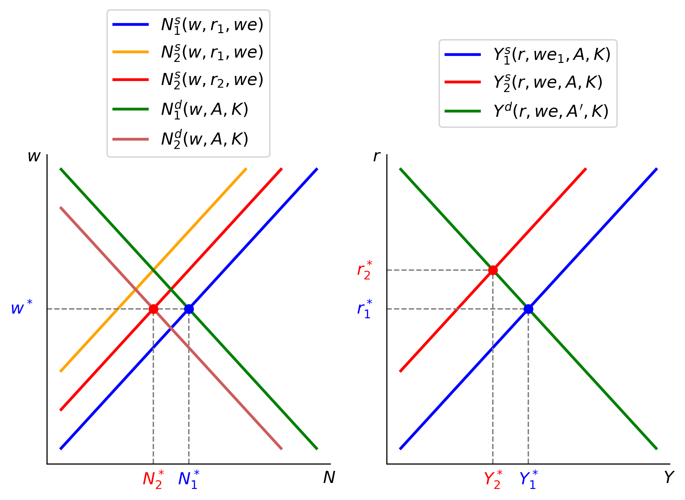
Obr. 17.19 Vplyv zníženia ponuky a dopytu práce na konkurenčnú rovnováhu#
17.18. Vplyv pandémie na konkurenčnú rovnováhu#
V roku 2020 prepukla pandémia COVID-19. V reakcii na šírenie ochorenia prijali vlády reštrikčné opatrenia, ktoré obmedzili ekonomickú aktivitu.
Obmedzenia sa prejavili predovšetkým poklesom ponuky práce.
V ľavom paneli Obr. 17.20 sa krivka ponuky práce posunie doľava z modrej čiary do oranžovej.
Práca klesne a v pravom paneli Obr. 17.20 sa krivka ponuky výstupu posunie doľava z modrej čiary do červenej. Výstup sa zníži z \(Y^*_1\) na \(Y^*_2\) a úroková miera vzrastie z \(r^*_1\) na \(r^*_2\).
Vyššia úroková miera vyvolá dynamický substitučný efekt. Spotrebiteľ obmedzí súčasný voľný čas a zvýši ponuku práce. Krivka ponuky práce sa preto posunie doprava z oranžovej do červenej čiary.
V novej rovnováhe sa práca zníži a reálna mzdová sadzba vzrastie.
Vyššia úroková miera zároveň zníži investície a dynamickým substitučným efektom obmedzí aj súčasnú spotrebu.
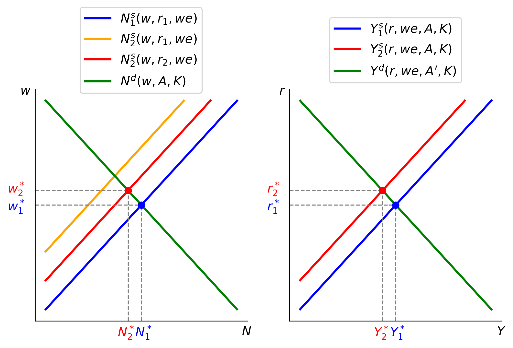
Obr. 17.20 Vplyv pandémie na konkurenčnú rovnováhu#
SIR model
Makroekonomické modely zaoberajúce sa vplyvmi pandémie COVID-19 boli často kombinované s epidemiologickými modelmi typu SIR (Susceptible-Infected-Recovered). V týchto modeloch ekonomická aktivita ovplyvňuje šírenie nákazy a naopak, šírenie nákazy ovplyvňuje ponuku práce a spotrebiteľské správanie. Moderné makroekonomické modely preto analyzujú pandémiu nielen ako šok do ponuky práce, ale aj ako výsledok interakcie medzi ekonomickými rozhodnutiami a vývojom ochorenia.
Pandémia COVID-19
Pandémia COVID-19 sa od väčšiny povojnových recesií odlišovala štruktúrou poklesu agregátneho dopytu. V minulých recesiách býval pokles investícií spravidla výrazne väčší ako pokles reálneho HDP. Podľa Obr. 13.15 a Obr. 13.14, počas pandémie však investície na Slovensku poklesli približne podobne ako reálny HDP, zatiaľ čo spotreba sa správala relatívne štandardne.
Jedným z možných vysvetlení je, že pandemická recesia nebola primárne spôsobená zhoršením fungovania finančného systému. Počas finančnej krízy z rokov 2008 – 2009 sa investície prepadli najmä v dôsledku rastu rizikových prirážok a sprísnenia úverových podmienok. Počas pandémie boli naopak dominantným faktorom zdravotné a administratívne obmedzenia ekonomickej aktivity.
Pandemické reštrikcie preto mohli pôsobiť ako špecifický typ ekonomickej nedokonalosti. Aj firmy s dostatočným financovaním často nemohli realizovať svoje investičné plány alebo výrobu v požadovanom rozsahu. V tomto zmysle možno časť poklesu ekonomickej aktivity interpretovať skôr ako dôsledok obmedzenej možnosti vykonávať ekonomickú činnosť než ako dôsledok problémov finančného sektora.
17.19. Príklad: Dynamický model všeobecnej rovnováhy v jazyku Python#
V príklade využijeme nasledovné balíčky:
from scipy.optimize import fsolve
import numpy as np
V tomto príklade skonštruujeme model všeobecnej rovnováhy v dvoch obdobiach, ktorý sa podobá modelu výrobnej ekonomiky z tejto kapitoly.
Model možno opísať sústavou podmienok prvého rádu spotrebiteľa (17.5)–(17.7) a podmienok prvého rádu firmy (17.17)–(17.19) spolu s ďalšími rovnicami špecifikujúcimi ostatné endogénne premenné.
Výstup v oboch obdobiach možno vypočítať pomocou produkčnej funkcie (17.11) resp. (17.11). Vzťah medzi investíciami a budúcim kapitálom je (17.13). Rovnováha na trhu výstupu v prvom období je
Druhé obdobie je posledné obdobie modelu. Firmy už neinvestujú do rozširovania kapitálu pre ďalšie obdobie, pretože ďalšie obdobie neexistuje. Investície preto slúžia iba na obnovu opotrebovaného kapitálu v objeme \(\delta K'\). Rovnováha na trhu výstupu v druhom období má preto tvar
pričom
Časové ohraničenie spotrebiteľa v oboch obdobiach je
17.19.1. Funkčné tvary a všetky rovnice modelu#
Preferencie reprezentatívneho spotrebiteľa opisuje funkcia užitočnosti v jednoduchom tvare:
kde \(\beta\) je diskontný faktor.
Produkčná funkcia (17.11),(17.12) je v Cobbovom-Douglasovom tvare
Dosaďme funkčné tvary a zapíšme sústavu všetkých rovníc. Podmienky prvého rádu spotrebiteľa (17.5)–(17.7) sú
a
Podmienky prvého rádu firmy (17.17)–(17.19) sú
a
Investície v oboch obdobiach sú
a
a
Rovnováha na trhoch produktov (17.29) a (17.30) je
a
a časové ohraničenia (17.31) a (17.32) sú
a
Označme množinu endogénnych premenných symbolom
Model pozostáva zo 14 rovníc pre 14 neznámych z množiny \(\mathcal{Y}\).
- Konkurenčná rovnováha
Pri danej spotrebe vlády \(\{G,G'\}\) a technológii firmy \(\{A,A'\}\) je konkurenčnou rovnováhou taká alokácia spotrebiteľa \(\{\ell,\ell',C,C'\}\), alokácia firmy \(\{N,N',K'\}\), zodpvedajúca množina endogénnych premenných \(\{Y,Y',I,I'\}\), a množina cien \(\{w,w',r\}\), ktoré zodpovedajú sústave rovníc pozostávajúcich z podmienok prvého rádu spotrebiteľa (17.35)–(17.37) podmienok prvého rádu firmy (17.38)–(17.40) investičnej funkcii (17.41) a (17.42), produkčnej funkcii (17.33) a (17.34) rovnováhe na trhu výstupu (17.29) a (17.30) a časového ohraničeniu (17.31) a (17.32).
Sústavu rovníc a endogénne premenné možno v jazyku Python špecifikovať nasledovnou funkciou
def ppr(endog):
C, Cp, l, lp, N, Np, Y, Yp, I, Ip, Kp, w, wp, r = endog
return (
C/l - w, # MRS(l,C)=w
Cp/lp - wp, # MRS(l',C')=w'
Cp/(beta*C) - (1+r), # MRS(C,C')=1+r
(1-alpha)*A*K**alpha*N**(-alpha) - w, # MPN=w
(1-alpha)*Ap*Kp**alpha*Np**(-alpha) - wp, # MPN'=w'
alpha*Ap*Kp**(alpha-1)*Np**(1-alpha) - delta - r, # MPK'-delta=r
Y - A*K**alpha*N**(1-alpha), # Y=AF(K,N)
Yp - Ap*Kp**alpha*Np**(1-alpha), # Y'=A'F(K',N')
I - (Kp - (1-delta)*K), # I=K'-(1-delta)K
Ip - delta*Kp, # I'=delta*K'
C + I + G - Y, # C+I+G=Y
Cp + Ip + Gp - Yp, # C'+I'+G'=Y'
N + l - h, # N+l=h
Np + lp - h # N'+l'=h
)
Pri analýze hospodárskych cyklov nás bude zaujímať aj súčasný priemerný produkt práce
17.19.2. Kalibrácia modelu#
Množina exogénnych premenných a parametrov je
Model možno riešiť iba numericky, preto za exogénne premenné a parametre dosadíme hodnoty, ktoré najviac zodpovedajú skutočnej ekonomike. Tomuto procesu hovoríme Kalibrácia modelu.
Pri kalibrácii budeme postupovať rovnako v príklade (Numerický príklad).
Hodnoty parametrov a exogénnych premenných \(\mathcal{X}\) rozdelíme do dvoch skupín. V prvej skupine sú hodnoty, ktoré zvolíme tak, aby výsledná konkurenčná rovnováha mala želané výsledky. V druhej sú hodnoty, ktoré zodpovedajú priemerom pozorovaných dát v ekonomike.
Normalizácia
Pri voľbe parametrov v prvej skupine zvolíme normalizácu v ustálenom stave, podľa ktorej si želáme, aby sa vstupy a výstup rovnali \(1\) v oboch obdobiach. Získame tak hodnoty \(\{G,G',A,A',h,\beta\}\).
Definujme normalizovanú konkurenčnú rovnováhu ako hodnoty endogénnych premenných, ktoré zodpovedajú normalizácii.
- Ustálený stav
Definujme ustálený stav, v ktorom sa premenné dynamicky nemenia, platí:
a
Vzhľadom na charakter modelu v dvoch obdobiach ide o hypotetický ustálený stav, v ktorom sú veličiny v oboch obdobiach rovnaké.
Vzhľadom na požiadavku jednotkových vstupov a výstupu platí:
Ak predpokladáme, že v ustálenom stave sú vstupy a výstup jednotkové, nie je zložité vypočítať konkurenčnú rovnováhu v ustálenom stave. Ukážeme, že daný ustálený stav zodpovedá jednoznačným hodnotám prvej skupiny parametrov a exogénnych premenných.
Produkčná funkcia (17.33) a (17.34) vyhovuje požiadavke (17.44), iba ak
Dosadením (17.44) a (17.45) do podmienok prvého rádu firmy vyjadrujúcich dopyt po práci (17.38) a (17.39) získame mzdovú sadzbu v oboch obdobiach v ustálenom stave
Dosaďme do časového ohraničenia (17.31) a (17.32) za prácu (17.44). Získame voľný čas v ustálenom stave
Dosaďme voľný čas (17.47) a mzdovú sadzbu (17.46) do podmienok prvého rádu spotrebiteľa (17.35) a (17.36). Získame
a
Po úprave platí
Za predpokladu jednotkového kapitálu v oboch obdobiach investície (17.41) a (17.42) sú
Keďže \(K=K'=1\), investície v oboch obdobiach slúžia iba na obnovu opotrebovaného kapitálu.
Spotrebu možno vyjadriť v podmienkách rovnováhy na trhu produktov (17.29) a (17.30), keď z rovníc rovnováhy
a
Platí
Z Eulerovej rovnice (17.37) vzhľadom na konštantnú spotrebu v ustálenom stave platí
Úrokovú miera v ustálenom stave tiež môžeme vyjadriť z podmienky prvého rádu firmy vyjadrujúce investičný dopyt (17.40). Po dosadení jednotkových vstupov (17.44) platí
Existujú dva spôsoby vyjadrenia spotreby (17.48) a (17.50) a úrokovej miery (17.51) a (17.52). Vďaka tomu možno nájsť jedinú hodnotu disponibilného času \(h\) a diskontného faktora \(\beta\), ktoré zodpovedajú normalizovanému ustálenému stavu.
Kombináciou (17.51) a (17.52) získame
Kombináciou (17.48) a (17.50) získame
Odvoďme \(h\)
Normalizovanému ustálenému stavu vyhovujú exogénne premenné a parametre (17.45), (17.53) a (17.54).
Skutočné pozorovania
Z podmienok rovnováhy na trhu produktov (17.29) a (17.30) vyplýva, že ak \(Y=Y'=1\), potom \(G\), \(G'\), \(C\) a \(C'\) predstavujú podiely vládnych nákupov a spotreby na výstupe.
Za podiel vládnych nákupov na výstupe možno zvoliť jeho dlhodobý priemer \(g\). Realistická hodnota je
V rozvinutých ekonomikách zodpovedá podiel kapitálu na výstupe približne hodnote
pričom priemerná miera znehodnotenia kapitálu je približne
Po dosadení týchto hodnôt získame z rovníc (17.53) a (17.54) hodnoty \(\beta,h\).
Nasleduje kalibrácia modelu v jazyku Python.
A = 1. # celková produktivita faktorov
Ap = 1. # budúca celková produktivita faktorov
alpha = 1/3 # podiel kapitálu na HDP
delta = 0.1 # miera znehodnotenia kapitálu
G = 1/4 # vládne nákupy (podiel n HDP)
Gp = 1/4
K = 1. # predeterminovaný kapitál
beta = 1 / (1 + alpha - delta) # diskontný faktor kalibrovaný tak, aby v ustálenom stave platilo Y=K=N=1
h = (1-G-delta)/(1-alpha) + 1 # disponibilný čas
Dosadením kalibrovaných hodnôt parametrov do sústavy rovníc a jej numerickým vyriešením získame konkurenčnú rovnováhu. Výsledok bude zodpovedať analyticky odvodenému ustálenému stavu (17.46)–(17.49) a (17.52).
C, Cp, l, lp, N, Np, Y, Yp, I, Ip, Kp, w, wp, r = fsolve(
ppr,
(1-delta-G, 1-delta-G, h-1, h-1, 1., 1.,1., 1.,delta, delta,1.,1-alpha,1-alpha,alpha-delta)
)
APN = Y / N # priemerný produkt práce vyjde 1
#zobraz výsledky
print("Všeobecná rovnováha")
print("Spotreba v prvom období", round(C,2), "v druhom", round(Cp,2))
print("Práca v prvom období", round(N,2), "v druhom", round(Np,2))
print("HDP v prvom období", round(Y,2), "v druhom", round(Yp,2))
print("Investície v prvom období",round(I,2), "v druhom", round(Ip,2))
print("Mzdová sadzba v prvom období", round(w,2), "v druhom", round(wp,2))
print("Úroková miera", round(r,2))
print("Priemerný produkt práce", round(APN,2))
Všeobecná rovnováha
Spotreba v prvom období 0.65 v druhom 0.65
Práca v prvom období 1.0 v druhom 1.0
HDP v prvom období 1.0 v druhom 1.0
Investície v prvom období 0.1 v druhom 0.1
Mzdová sadzba v prvom období 0.67 v druhom 0.67
Úroková miera 0.23
Priemerný produkt práce 1.0
Výsledné hodnoty nemusia zodpovedať reálnym úrovniam ekonomických veličín, pretože model je kalibrovaný tak, aby konkurenčná rovnováha zodpovedala normalizovanému ustálenému stavu. Spotreba, investície a vládne nákupy možno interpretovať ako podiely na HDP, keďže v ustálenom stave platí \(Y=1\).
Kapitálový podiel na HDP sa v Cobbovej-Douglasovej produkčnej funkcii rovná parametru \(\alpha\). V konkurenčnej rovnováhe sa tento podiel rozdeľuje medzi čistý výnos kapitálu \(r\) a náklady na obnovu opotrebovaného kapitálu \(\delta\), preto platí
To znamená, že približne tretina výstupu pripadá vlastníkovi kapitálu, pričom časť kompenzuje znehodnotenie kapitálu a zvyšok predstavuje čistý výnos kapitálu.
V nasledujúcej časti simulujeme dosahy rôznych šokov na hospodárstvo. V súlade s výkladom z predchádzajúcich častí pomocou modelu preskúmame, ako sa zmení hospodárstvo, ak sa
zvýšia súčasné vládne nákupy (fiškálny šok),
zníži stav predeterminovaného kapitálu (katastrofa),
zvýši súčasná celková produktivita faktorov (dobrá úroda),
zvýši budúca celková produktivita faktorov (optimistické správy),
zvýši úroková prirážka (finančný šok),
simultánne znížia ponuka a dopyt po práci (sektorový šok),
zníži ponuka práce (pandémia).
Mnohé výsledky budeme vyjadrovať v percentách. Na výpočet percentuálnej zmeny preto použijeme pomocnú funkciu:
def percent_zmena(pred, po):
return 100 * (po - pred) / pred
17.19.3. Vplyv zvýšenia súčasných vládnych nákupov#
Podľa teoretického modelu Vplyv zvýšenia súčasných vládnych nákupov na konkurenčnú rovnováhu sa pri zvýšení súčasných vládnych nákupov
zvýši HDP,
zvýši úroková miera,
zníži spotreba,
znížia investície,
zvýši práca,
zníži reálna mzdová sadzba,
fiškálny multiplikátor bude kladný, ale menší ako 1.
Zodpovedá numerický model týmto predikciám?
Zvýšme vládne nákupy o 0,1, ceteris paribus, z hodnoty 0,25 na 0,35. Preskúmajme, ako sa zmení konkurenčná rovnováha v prvom období.
G = 1/4 + 0.1 # zvýšenie vládnych nákupov
# nová konkurenčná rovnováha
C_g, Cp_g, l_g, lp_g, N_g, Np_g, Y_g, Yp_g, I_g, Ip_g, Kp_g, w_g, wp_g, r_g = fsolve(
ppr,
(C, Cp, l, lp, N, Np, Y, Yp, I, Ip, Kp, w, wp, r)
)
APN_g = Y_g/N_g # nový priemerný produkt práce
print("Zmena ekonomiky po zvýšení vládnych nákupov o 0,1 v absolútnych jednotkách")
print("Spotreba", round(C_g-C,4))
print("Práca", round(N_g-N,4))
print("HDP", round(Y_g-Y,4),)
print("Mzdová sadzba", round(w_g-w,4))
print("Úroková miera", round(r_g-r,4))
print("Priemerný produkt práce", round(APN_g-APN,4))
print("Investície", round(I_g-I,4))
G = 1/4 # Nakoniec vráťme vládne nákupy do pôvodnej hodnoty.
Zmena ekonomiky po zvýšení vládnych nákupov o 0,1 v absolútnych jednotkách
Spotreba -0.0218
Práca 0.0249
HDP 0.0165
Mzdová sadzba -0.0054
Úroková miera 0.0146
Priemerný produkt práce -0.0082
Investície -0.0617
Výsledky sú vyjadrené v absolútnych jednotkách modelu, nie v percentách. Tento spôsob prezentácie je vhodný pri fiškálnom šoku, keďže fiškálny multiplikátor je definovaný ako pomer absolútnej zmeny výstupu a absolútnej zmeny vládnych nákupov.
Vypočítajme fiškálny mutliplikátor výstupu
print("Fiškálny multiplikátor výstupu", round((Y_g-Y)/0.1,4))
Fiškálny multiplikátor výstupu 0.1654
Výsledky zodpovedajú teórii.
Zvýšenie vládnych nákupov o jednu jednotku zvýši výstup iba o približne 0,165 jednotky. Zvýšenie vládnych výdavkov je preto čiastočne kompenzované poklesom súkromnej spotreby a investícií.
Upozornenie
Numerický príklad nezachytáva pokles životného bohatstva vyvolaný budúcim zvýšením daní.
Chýba preto príjmový efekt, ktorý v teoretickej analýze na Obr. 17.14 posúva doprava ponuku práce a ponuku výstupu.
Súčasne chýba aj pokles spotreby spôsobený nižším životným bohatstvom. Dopyt po výstupe sa preto v numerickej analýze posunie viac doprava než v teoretickom modeli.
V dôsledku toho numerický fiškálny multiplikátor nadhodnocuje skutočný účinok zvýšenia vládnych nákupov na výstup.
17.19.4. Vplyv zníženia predeterminovaného kapitálu#
Podľa teórie Vplyv zníženia kapitálu na konkurenčnú rovnováhu, ak sa zníži predeterminovaná hodnota kapitálu,
zvýši sa úroková miera,
zníži sa spotreba
zvýšia sa investície
zníži sa mzdová sadzba.
Vplyv tejto zmeny na HDP a prácu nie je jednoznačný. Pokles kapitálu znižuje produkčné možnosti ekonomiky, ale súčasne zvyšuje motiváciu firiem investovať do obnovy kapitálu.
Znížme hodnotu predeterminovaného kapitálo o 1 %, ceteris paribus, na hodnotu 0.99. Preskúmajme zmenu konkurenčnej rovnováhy v prvom období.
K = 0.99 # zníženie predeterminovaného kapitálu
# nová konkurenčná rovnováha
C_K, Cp_K, l_K, lp_K, N_K, Np_K, Y_K, Yp_K, I_K, Ip_K, Kp_K, w_K, wp_K, r_K = fsolve(
ppr,
(C, Cp, l, lp, N, Np, Y, Yp, I, Ip, Kp, w, wp, r)
)
APN_K = Y_K/N_K # nový priemerný produkt práce
print("Percentuálne zmeny po znížení predeterminovaného kapitálu o 1 %")
print("Spotreba", round(percent_zmena(C,C_K),4))
print("Práca", round(percent_zmena(N,N_K),4))
print("HDP", round(percent_zmena(Y,Y_K),4))
print("Mzdová sadzba", round(percent_zmena(w,w_K),4))
print("Úroková miera", round(percent_zmena(r,r_K),4))
print("Priemerný produkt práce", round(percent_zmena(APN,APN_K),4))
print("Investície", round(percent_zmena(I,I_K),4))
K=1. # Nakoniec vráťme kapitál do pôvodnej hodnoty.
Percentuálne zmeny po znížení predeterminovaného kapitálu o 1 %
Spotreba -0.463
Práca 0.0949
HDP -0.2714
Mzdová sadzba -0.366
Úroková miera 0.8443
Priemerný produkt práce -0.366
Investície 0.2953
Numerická simulácia potvrdzuje, že pokles kapitálu vedie k rastu úrokovej miery, poklesu reálnej mzdovej sadzby a rastu investícií. Reakcia práce a výstupu je podstatne slabšia a závisí od relatívnej sily produkčného a investičného efektu.
17.19.5. Vplyv zvýšenia súčasnej celkovej produktivity faktorov#
Podľa teórie Vplyv zvýšenia súčasnej celkovej produktivity faktorov sa pri zvýšení súčasnej celkovej produktivity faktorov
zvýši HDP,
zníži úroková miera,
zvýšia investície,
zvýši sa spotreba,
zvýši sa práca,
zvýši sa reálna mzdová sadzba,
zvýši sa priemerný produkt práce.
Overme tieto predikcie pomocou numerického modelu. Zvýšme celkovú produktivitu faktorov v prvom období o 1 % na hodnotu 1,01.
A=1.01
# nová konkurenčná rovnováha
C_a, Cp_a, l_a, lp_a, N_a, Np_a, Y_a, Yp_a, I_a, Ip_a, Kp_a, w_a, wp_a, r_a = fsolve(
ppr,
(C, Cp, l, lp, N, Np, Y, Yp, I, Ip, Kp, w, wp, r)
)
APN_a = Y_a/N_a # nový priemerný produkt práce
print("Percentuálne zmeny po zvýšení celkovej produktivity faktorov o 1 %")
print("Spotreba", round(percent_zmena(C,C_a),4))
print("Práca", round(percent_zmena(N,N_a),4))
print("HDP", round(percent_zmena(Y,Y_a),4))
print("Mzdová sadzba", round(percent_zmena(w,w_a),4))
print("Úroková miera", round(percent_zmena(r,r_a),4))
print("Priemerný produkt práce", round(percent_zmena(APN,APN_a),4))
print("Investície", round(percent_zmena(I,I_a),4))
A = 1. # pôvodná hodnota
Percentuálne zmeny po zvýšení celkovej produktivity faktorov o 1 %
Spotreba 0.4914
Práca 0.3711
HDP 1.2497
Mzdová sadzba 0.8754
Úroková miera -0.8885
Priemerný produkt práce 0.8754
Investície 9.3035
Keďže šok predstavuje zvýšenie produktivity o 1 %, percentuálne zmeny jednotlivých premenných možno interpretovať približne ako elasticity vzhľadom na celkovú produktivitu faktorov.
Model potvrdzuje teoretické predikcie. Zvýšenie produktivity vedie k rastu výstupu, spotreby, investícií, práce a reálnej mzdovej sadzby. Súčasne klesá úroková miera. Na rozdiel od fiškálneho šoku rastie aj priemerný produkt práce, pretože vyššia produktivita posúva celú produkčnú funkciu nahor.
17.19.6. Vplyv očakávaného zvýšenia budúcej celkovej produktivity faktorov#
Podľa teórie Vplyv očakávaného zvýšenia budúcej celkovej produktivity faktorov sa pri zvýšení budúcej celkovej produktivity faktorov zvýši úroková miera. Reakcia ostatných premenných závisí od dynamického substitučného efektu a príjmového efektu.
Zvýšme celkovú produktivitu faktorov v budúcom období o 1 % na hodnotu 1,01.
Ap=1.01
# nová konkurenčná rovnováha
C_ap, Cp_ap, l_ap, lp_ap, N_ap, Np_ap, Y_ap, Yp_ap, I_ap, Ip_ap, Kp_ap, w_ap, wp_ap, r_ap = fsolve(
ppr,
(C, Cp, l, lp, N, Np, Y, Yp, I, Ip, Kp, w, wp, r)
)
APN_ap = Y_ap/N_ap # nový priemerný produkt práce
print("Percentuálne zmeny po zvýšení budúcej celkovej produktivity faktorov o 1 %")
print("Spotreba", round(percent_zmena(C,C_ap),4))
print("Práca", round(percent_zmena(N,N_ap),4))
print("HDP", round(percent_zmena(Y,Y_ap),4))
print("Mzdová sadzba", round(percent_zmena(w,w_ap),4))
print("Úroková miera", round(percent_zmena(r,r_ap),4))
print("Priemerný produkt práce", round(percent_zmena(APN,APN_ap),4))
print("Investície", round(percent_zmena(I,I_ap),4))
Ap = 1. # pôvodná hodnota
Percentuálne zmeny po zvýšení budúcej celkovej produktivity faktorov o 1 %
Spotreba 0.6661
Práca -0.4892
HDP -0.3264
Mzdová sadzba 0.1636
Úroková miera 1.9555
Priemerný produkt práce 0.1636
Investície -7.5936
Výsledok numerickej analýzy zodpovedá situácii, keď príjmový efekt zvýšenia životného bohatstva preváži nad dynamickým substitučným efektom zvýšenia úrokovej miery. Posuny kriviek ponuky práce a výstupu doľava sú preto väčšie ako opačné posuny vyvolané dynamickým substitučným efektom. V dôsledku toho v prvom období klesnú práca aj HDP.
Spotreba vzrástla, z čoho vyplýva, že príjmový efekt zvýšenia životného bohatstva prevážil nad dynamickým substitučným efektom rastu úrokovej miery. Pri zvolenej kalibrácii domácnosti využili očakávané zvýšenie budúcich príjmov predovšetkým na rast spotreby a voľného času. Dôsledkom bol pokles práce, výstupu a investícií v prvom období.
Ukázali sme (Riziko-averzné preferencie), že relatívna veľkosť substitučného a príjmového efektu závisí od tvaru funkcie užitočnosti. Pri zvolenej logaritmickej funkcii užitočnosti prevážil príjmový efekt rastu životného bohatstva nad dynamickým substitučným efektom rastu úrokovej miery. Pri odlišnej CRRA špecifikácii preferencií by mohol prevážiť opačný efekt a výsledky by boli bližšie grafickej analýze.
17.19.7. Vplyv úrokovej prirážky v investičnej funkcii#
V modeli upravíme podmienku prvého rádu firmy pre investičný dopyt (17.40). Predpokladajme, že firmy financujú investície úverom a platia úrokovú mieru zvýšenú o úrokovú prirážku \(r_p\). Podmienka optimálneho investičného rozhodnutia má potom tvar
Úroková prirážka zvyšuje náklady financovania investícií a pôsobí podobne ako zvýšenie trhovej úrokovej miery. Pri danej hodnote \(r\) preto vedie k poklesu optimálnej zásoby kapitálu a investícií.
Zmenený model je potrebné opätovne špecifikovať v jazyku Python.
def ppr_rp(endog):
C, Cp, l, lp, N, Np, Y, Yp, I, Ip, Kp, w, wp, r = endog
return (
C/l - w,
Cp/lp - wp,
Cp/(beta*C) - (1+r),
(1-alpha)*A*K**alpha*N**(-alpha) - w,
(1-alpha)*Ap*Kp**alpha*Np**(-alpha) - wp,
alpha*Ap*Kp**(alpha-1)*Np**(1-alpha) - delta - r - r_p, # ZMENA, MPK'-delta=r+r_p
Y - A*K**alpha*N**(1-alpha),
Yp - Ap*Kp**alpha*Np**(1-alpha),
I - (Kp - (1-delta)*K),
Ip - delta*Kp,
C + I + G - Y,
Cp + Ip + Gp - Yp,
N + l - h,
Np + lp - h
)
Predpokladáme, že v ustálenom stave platí \(r_p=0\). Zavedenie úrokovej prirážky preto nemení kalibráciu ani pôvodný ustálený stav modelu.
Podľa teórie Vplyv zvýšenia úrokovej prirážky spôsobenej nedokonalosťami na trhu dlhopisov (finančný šok) zvýšenie úrokovej prirážky znižuje rovnovážnu úrokovú mieru. Vplyv na ostatné endogénne premenné nie je jednoznačný, pretože výsledok závisí od relatívnej veľkosti príjmového efektu poklesu životného bohatstva a dynamického substitučného efektu vyvolaného poklesom úrokovej miery.
Preskúmajme tento vplyv pomocou numerickej simulácie.
r_p=0.01
# nová konkurenčná rovnováha
C_r, Cp_r, l_r, lp_r, N_r, Np_r, Y_r, Yp_r, I_r, Ip_r, Kp_r, w_r, wp_r, r_r = fsolve(
ppr_rp,
(C, Cp, l, lp, N, Np, Y, Yp, I, Ip, Kp, w, wp, r)
)
APN_r = Y_r/N_r # nový priemerný produkt práce
print("Percentuálne zmeny po zvýšení úrokovej prirážky o 1 percentuálny bod.")
print("Spotreba", round(percent_zmena(C,C_r),4))
print("Práca", round(percent_zmena(N,N_r),4))
print("HDP", round(percent_zmena(Y,Y_r),4))
print("Mzdová sadzba", round(percent_zmena(w,w_r),4))
print("Úroková miera", round(percent_zmena(r,r_r),4))
print("Priemerný produkt práce", round(percent_zmena(APN,APN_r),4))
print("Investície", round(percent_zmena(I,I_r),4))
r_p = 0. # pôvodná hodnota
Percentuálne zmeny po zvýšení úrokovej prirážky o 1 percentuálny bod.
Spotreba 0.507
Práca -0.3725
HDP -0.2485
Mzdová sadzba 0.1245
Úroková miera -3.7265
Priemerný produkt práce 0.1245
Investície -5.7802
Grafická analýza predpokladala, že zvýšenie úrokovej prirážky pôsobí nielen na investičný dopyt firiem, ale aj na spotrebiteľa prostredníctvom zníženia životného bohatstva a horšieho prístupu k úverom. V numerickom modeli je úroková prirážka zavedená iba ako dodatočný náklad investícií v podmienke prvého rádu firmy. Simulácia preto zachytáva investičný kanál finančného šoku, ale abstrahuje od jeho priameho vplyvu na životné bohatstvo domácností.
17.19.8. Vplyv zníženia dopytu a ponuky práce (sektorový šok)#
V modeli potrebujeme formulovať exogénne zmeny ponuky a dopytu práce. Upravme časové ohraničenie spotrebiteľa a podmienku prvého rádu firmy pre dopyt po práci do tvaru
a
kde \(\nu=\epsilon=1\) v pôvodnom modeli.
Ak sa parameter \(\nu\) zvýši, ponuka práce sa zníži. Na získanie jednotky práce je potrebné obetovať väčšie množstvo disponibilného času.
Ak sa parameter \(\epsilon\) zvýši, zníži sa dopyt po práci, pretože pri danom množstve práce klesne hraničný produkt práce.
def ppr_e(endog):
C, Cp, l, lp, N, Np, Y, Yp, I, Ip, Kp, w, wp, r = endog
return (
C/l - w,
Cp/lp - wp,
Cp/(beta*C) - (1+r),
(1-alpha)*A*K**alpha*(epsilon*N)**(-alpha) - w, # ZMENA
(1-alpha)*Ap*Kp**alpha*Np**(-alpha) - wp,
alpha*Ap*Kp**(alpha-1)*Np**(1-alpha) - delta - r,
Y - A*K**alpha*N**(1-alpha),
Yp - Ap*Kp**alpha*Np**(1-alpha),
I - (Kp - (1-delta)*K),
Ip - delta*Kp,
C + I + G - Y,
Cp + Ip + Gp - Yp,
l + nu*N - h, # ZMENA
Np + lp - h
)
Podľa teórie Vplyv sektorových šokov (simultánny pokles ponuky a dopytu po práci), ak sa simultánne znížia dopyt aj ponuka práce,
zníži sa práca,
zníži sa HDP,
zvýši sa úroková miera,
zníži sa spotreba,
znížia sa investície,
zvýši sa priemerný produkt práce.
Reakcia reálnej mzdovej sadzby nie je jednoznačná. Závisí od relatívnej veľkosti poklesu dopytu a ponuky práce a od sily dynamického substitučného efektu vyvolaného rastom úrokovej miery.
nu=1.01
epsilon=1.01
# nová konkurenčná rovnováha
C_e, Cp_e, l_e, lp_e, N_e, Np_e, Y_e, Yp_e, I_e, Ip_e, Kp_e, w_e, wp_e, r_e = fsolve(
ppr_e,
(C, Cp, l, lp, N, Np, Y, Yp, I, Ip, Kp, w, wp, r)
)
APN_e = Y_e/N_e # nový priemerný produkt práce
print("Percentuálne zmeny po simultánnom poklese ponuky a dopytu po práci.")
print("Spotreba", round(percent_zmena(C,C_e),4))
print("Práca", round(percent_zmena(N,N_e),4))
print("HDP", round(percent_zmena(Y,Y_e),4))
print("Mzdová sadzba", round(percent_zmena(w,w_e),4))
print("Úroková miera", round(percent_zmena(r,r_e),4))
print("Priemerný produkt práce", round(percent_zmena(APN,APN_e),4))
print("Investície", round(percent_zmena(I,I_e),4))
nu=1
epsilon=1
Percentuálne zmeny po simultánnom poklese ponuky a dopytu po práci.
Spotreba -0.2188
Práca -0.8305
HDP -0.5545
Mzdová sadzba -0.0537
Úroková miera 0.3982
Priemerný produkt práce 0.2784
Investície -4.1221
Numerická simulácia potvrdzuje teoretické predikcie modelu. Pokles efektu vyhľadávania znižuje prácu, výstup a spotrebu. Keďže sa znižuje ponuka výstupu pri nezmenenom dopyte, úroková miera rastie a investície klesajú.
Priemerný produkt práce rastie, pretože ekonomika sa pohybuje po produkčnej funkcii smerom k nižšiemu využitiu práce. Dynamický substitučný efekt rastu úrokovej miery je dostatočne silný na to, aby mierne znížil reálnu mzdovú sadzbu.
17.19.9. Vplyv pandémie#
Podľa teórie Vplyv pandémie na konkurenčnú rovnováhu sa v pandémii posunie krivka ponuku práce doľava, následkom čoho
sa zníži výstup,
sa zníži práca,
sa zvýši úroková miera,
sa zvýši mzdová sadzba,
sa zníži spotreba,
sa znížia investície.
Preverme teóriu numerickým modelom.
nu=1.01
# nová konkurenčná rovnováha
C_Ns, Cp_Ns, l_Ns, lp_Ns, N_Ns, Np_Ns, Y_Ns, Yp_Ns, I_Ns, Ip_Ns, Kp_Ns, w_Ns, wp_Ns, r_Ns = fsolve(
ppr_e,
(C, Cp, l, lp, N, Np, Y, Yp, I, Ip, Kp, w, wp, r)
)
APN_Ns = Y_Ns/N_Ns # nový priemerný produkt práce
print("Percentuálne zmeny po poklese ponuky práce.")
print("Spotreba", round(percent_zmena(C,C_Ns),4))
print("Práca", round(percent_zmena(N,N_Ns),4))
print("HDP", round(percent_zmena(Y,Y_Ns),4))
print("Mzdová sadzba", round(percent_zmena(w,w_Ns),4))
print("Úroková miera", round(percent_zmena(r,r_Ns),4))
print("Priemerný produkt práce", round(percent_zmena(APN,APN_Ns),4))
print("Investície", round(percent_zmena(I,I_Ns),4))
nu=1
Percentuálne zmeny po poklese ponuky práce.
Spotreba -0.1654
Práca -0.6282
HDP -0.4192
Mzdová sadzba 0.2103
Úroková miera 0.3009
Priemerný produkt práce 0.2103
Investície -3.117
Numerická simulácia potvrdzuje teoretické predikcie modelu. Pokles ponuky práce znižuje prácu, výstup a spotrebu. Nižšia ponuka výstupu pri nezmenenom dopyte zvyšuje úrokovú mieru, čo vedie k poklesu investícií. Súčasne rastie priemerný produkt práce aj reálna mzdová sadzba.
17.20. Neriešený príklad#
Zvoľte si ľubovoľnú ekonomiku, pre ktorú databáza Penn World Table (PWT) obsahuje aspoň 30 pozorovaní premenných:
podiel kompenzácií práce na HDP (
labsh),podiel vládnej spotreby na HDP (
csh_g),miera znehodnotenia kapitálu (
delta).
Vypočítajte priemery týchto časových radov.
Využite vypočítané priemery na kalibráciu parametrov dynamického modelu všeobecnej rovnováhy.
V kalibrovanom modeli analyzujte:
vplyv fiškálnej politiky,
vplyv katastrofy (poklesu predeterminovaného kapitálu),
vplyv zvýšenia súčasnej celkovej produktivity faktorov,
vplyv očakávaného zvýšenia budúcej celkovej produktivity faktorov,
vplyv úrokovej prirážky v investičnej funkcii,
vplyv sektorového šoku,
vplyv pandémie.
Výsledky jednotlivých simulácií porovnajte s teoretickými predikciami modelu. Vysvetlite prípadné rozdiely medzi grafickou a numerickou analýzou.